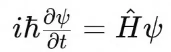
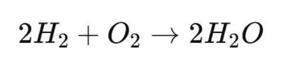
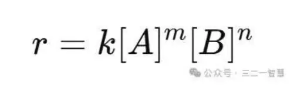
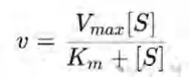
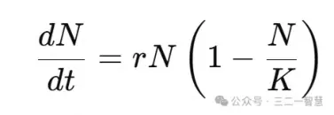
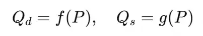
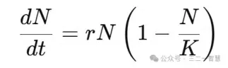
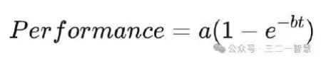
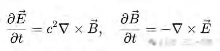

函数与方程的特征纠缠解构 —— 从日常生活到科学文明的符号之光
摘要
几千年来，人类一直把数学视为“真理的语言”，把函数与方程当作揭示世界本质的钥匙。然而，这种“发现学”的幻觉让我们误以为：数学公式是世界的真理，而科学规律是客体的必然属性。《函数与方程的特征纠缠解构》要温柔而坚定地告诉我们：函数与方程并不是“发现真理”，而是“表征特征纠缠”的符号工具。
世界的最小存在单元是 SIO整体（主体–互动–客体）。在SIO互动中，差异被稳定化为特征，不同特征相互激发、互相制约，形成 特征纠缠。当这种纠缠被抽象与符号化，就出现了“变量”；当变量之间的关系被形式固定，就出现了“函数与方程”。因此：
变量 = 特征的符号表征；
函数 = 特征纠缠的映射形式；
方程 = 特征纠缠的约束形式。
二者的内核一致：都是 特征纠缠的符号化表达。
本文从日常生活的经验依赖（火候与菜味、努力与回报）切入，展示“函数直觉”如何根植于我们最普通的生活体验；继而进入科学世界，从物理的力学方程，到化学反应速率，从生物学的酶动力学到经济学的供需模型，再到心理学的压力–表现曲线，全面揭示：函数与方程无处不在，它们不是发现真理，而是建模SIO特征纠缠的符号化形式。当我们明白这一点，科学不再是冷冰冰的“真理工厂”，而成为充满创造力的“建模艺术”；数学不再是抽象的逻辑牢笼，而是特征纠缠的语言。光照于此，我们会被点拨：真理并非外在的永恒本质，而是特征纠缠的稳定性；我们会被唤醒：函数与方程不是世界的镜子，而是文明的投影。
这是一场认知的革命：它要把我们从“发现学的愚昧”中解放出来，进入“发生学的光明”，让我们第一次真正理解：数学的根基，不是“真理”，而是 特征纠缠的符号之光。
导论
函数与方程的特征纠缠解构：从真理幻觉到建模之光
一、问题的提出：函数与方程，到底是什么？
在小学课堂上，我们第一次听到“函数”的定义：
函数是两个变量之间的一种对应关系。
我们又在中学遇到“方程”的定义：
方程是含有未知数的等式。
这两句话，似乎简单明了。但请仔细想一想：
为什么要把“函数”限定为“两个变量的对应关系”？变量是什么？它凭什么存在？
为什么“方程”必须用“等式”形式来表达？这种“等式”与世界真实之间到底是什么关系？为什么人类会相信，函数与方程能“揭示”世界的真理？
从来没有一个小学生敢举手问老师：
“老师，函数的本质是什么？方程为什么是对的？”
老师也不会回答：
“因为函数与方程是人类用来表征特征纠缠的符号工具。”
于是，问题就被掩盖了。我们带着这些定义一路走到大学、研究生、博士，走入科学和工程领域，已经忘记了最初的问题：函数和方程究竟是什么？它们与世界的关系是什么？它们为什么能运作？它们是否真的是“世界真理”的语言？
二、传统的幻觉：函数与方程=真理？
在近代科学的辉煌历史中，人类一次次被函数与方程的威力所震撼。
牛顿写下 F=ma
，从此揭示了天体与苹果的统一规律。
麦克斯韦写下四组方程，电与磁从此不再是两种孤立现象，而成为电磁统一场。
薛定谔写下波动方程，电子的神秘轨迹被纳入符号化的预测框架。
爱因斯坦写下 E=mc^2
，人类第一次理解能量与质量的深度纠缠。
于是，人类形成了一种极其牢固的信念：
函数与方程不是人造工具，而是宇宙的真理。
但是，这里有一个根本性的哲学疑问：
如果函数与方程真的是“世界真理”，为什么科学史中那么多方程最终死亡？燃素方程、热质方程、以太方程，曾经同样被视为“不可动摇的真理”，如今却成了笑谈。
如果函数与方程是“真理”，为什么不同的理论方程会互相矛盾？经典力学的方程与量子力学的方程在基本假设上无法统一，它们难道都是“真理”？
如果函数与方程是“真理”，为什么它们还需要不断修正？牛顿方程在微观与高速情境下失效，爱因斯坦的方程也面临量子引力的挑战，这说明“真理”是会过期的吗？
这些问题，把我们带入一个令人不安的深渊：
函数与方程真的能代表世界的本质吗？还是说，它们只是人类创造的符号表征？
三、SIO本体论的转向：存在并不是对象，而是互动整体
要回答这个问题，我们必须回到存在的根源。
1. 主客二分的困境
几千年来，哲学和科学普遍假设：
世界由客体组成，它们有固有属性；
主体通过感官接收这些属性，形成认知；
函数与方程是对这些客体属性之间关系的揭示。
但量子力学、复杂系统科学、神经科学已经告诉我们：
世界并不是由孤立的客体组成，而是由互动生成的整体。
在测量之前，粒子并没有固定的状态；它们的“属性”在互动过程中才显现。
感知也不是简单的输入，而是差异在互动中的稳定化过程。
因此，主客二分是一个幻觉。
2. SIO整体：存在的最小单元
我们必须用新的语言：
S（主体）：感知与行动的一极；
I（互动）：作用与反作用的过程；
O（客体）：被作用又能反制的一极。
世界的最小单元不是孤立的S或O，而是 SIO整体。
没有主体，客体就无从显影；没有客体，主体也无法存在；互动不是桥梁，而是存在本身。
由此，我们得出一个新的出发点：
函数与方程并不是揭示客体的真理，而是对SIO互动中“特征纠缠”的符号建模。
四、特征律的引入：为什么需要函数？
在SIO互动中，最基本的产物是“差异”。不同互动之间的差异（ΔSIO）在复杂性运行中，逐渐稳定化，显影为“特征”。
例如：
光点的亮度差异稳定，显影为“形状”；
声波频率差异稳定，显影为“旋律”；
力的作用差异稳定，显影为“硬度”；
情感互动差异稳定，显影为“爱”。
这就是特征律：特征 = ΔSIO的差异稳定化。
但请注意：
特征不是客体固有的；
特征不是主体施加的；
特征是差异在互动中的稳定化显影。
而当多个特征互相制约、互相激发时，就形成 特征纠缠。
函数与方程，正是对这种 特征纠缠的符号表征。
五、变量的本质：特征的符号化
既然特征是差异稳定化的显影，那么变量又是什么？
温度 T：冷热差异的符号化。
速度 v：位置与时间差异的符号化。
利率 r：资本时间差异的符号化。
所以：
变量不是世界的属性，而是特征的符号表征。
函数与方程中的一切变量，都是人类对特征的压缩与编码。
六、函数与方程的统一：特征纠缠的符号表征
现在我们终于能看清：
函数：强调映射形式，一个变量的变化如何牵动另一个变量。
方程：强调约束形式，若干变量如何同时满足关系。
二者的差异，只是表征方式的不同；二者的内核完全一致：
函数与方程=特征纠缠的符号表征。
例如：
y=f(x)y=f(x)y=f(x)：x与y的特征纠缠。
F=maF=maF=ma：力、质量、加速度的特征纠缠。
E=mc2E=mc^2E=mc2：能量与质量的特征纠缠。
薛定谔方程：波函数与能量的特征纠缠。
七、提出问题：数学的哲学震撼
到这里，新的问题纷至沓来：
1. 如果函数与方程不是“真理”，而是建模，那么“真理”是什么？
真理是差异的稳定性（特征），而不是方程本身。
2. 如果函数与方程只是符号表征，那么它们的有效性从哪里来？
有效性来自特征纠缠的稳定性，而不是符号自身。
3. 如果函数与方程会死亡，那么科学是否也会死亡？
科学不会死亡，它会不断重生，因为ΔSIO永不停止，新的特征纠缠不断出现。
4. 如果科学不是“发现”，而是“建模”，那么教育该如何转型？
教育不是“灌输知识”，而是训练学生在差异中生成新的特征，学会建模特征纠缠。
八、日常生活的例证
我们不必停留在高深的理论，看看日常生活：
烹饪：火候与味道的函数关系，其实是温度差异、食材特征、时间节奏的纠缠。
运动：跑步速度与心率的函数关系，是身体能量与肌肉状态的纠缠。
社会：努力与收获的函数关系，是个体选择与环境反馈的纠缠。
我们从未发现“真理”，只是一次次把生活中的特征纠缠符号化为直觉的函数。
九、科学的应用：从生活到文明
物理学：所有公式都是特征纠缠的符号化。
化学：反应速率方程 = 浓度与时间的纠缠。
生物学：酶动力学方程 = 底物浓度与反应速率的纠缠。
经济学：供需函数 = 价格与数量的纠缠。
心理学：压力–表现曲线 = 张力与效率的纠缠。
函数与方程无处不在，但它们从来不是“真理”，而是人类在SIO互动中对特征纠缠的建模语言。
十、结语：从发现学到发生学
传统观念：
函数与方程是世界真理。
科学是发现真理。
教育是传递真理。
发生学观念：
函数与方程=特征纠缠的符号表征。
科学=对SIO互动的建模。
教育=训练差异敏感性与特征生成。
当我们理解这一点，就会被彻底唤醒：
函数与方程不是世界的镜子，而是文明的投影。
它们不是通向真理的窗户，而是人类创造意义的语言。
第一编
日常生活中的特征纠缠与函数直觉
一、导言：为什么要从日常生活开始？
哲学与数学常常被认为是高不可攀的殿堂。人们以为，只有在公式的演算、科学的实验、逻辑的推理中，才能触摸“真理”。然而，若我们认真回到生活本身，就会发现：函数与方程的直觉，其实早已深藏在日常经验中。
我们吃饭、走路、做菜、交谈、劳动，这些最普通的生活细节，处处都是 特征纠缠 的舞台。只是，我们习惯了“使用”，却从未“自觉”；我们看见了“结果”，却忽视了“过程”；我们接受了“经验”，却没有洞察到“规律”。
因此，本编的使命是：从日常生活的直觉经验出发，揭示函数与方程的发生学根源，让人们明白：函数并不是学校的发明，而是生命的自然直觉；方程不是科学家的专利，而是文明早已在生活中熟练使用的语言。
二、烹饪：火候与味道的函数
1. 问题的提出
为什么同样的食材，有人做出的菜香气扑鼻，有人做出的却寡淡无味？
为什么厨师常说“火候”决定一切？
2. 函数直觉
在这里，所谓“火候”，就是温度与时间的特征纠缠。食材在火焰中不断经历分解、反应、融合：
当温度过低，食材不能熟透，味道平淡；
当温度过高，食材焦糊，口感丧失；
当温度适中、时间合宜，分子结构达到最佳状态，味道才会释放。
这不就是一个最典型的 函数关系 吗？
味道=f(温度,时间)
3. 点拨
但请注意：
温度并不是食材的固有属性，而是“火–食材–锅”的SIO互动的结果；
味道也不是食材的固有属性，而是“食材–舌头–味觉”的SIO互动的结果；
函数关系并不是“世界的真理”，而是人类在反复试错中发现并稳定下来的 特征纠缠。所以，所谓“火候与味道的关系”，并不是自然界里早已写好的“方程”，而是厨师在差异—稳定化过程中形成的经验建模。
三、运动：速度与疲劳的函数
1. 问题的提出
为什么跑步10分钟感觉轻松，跑步40分钟却气喘吁吁？
为什么运动员训练后能跑更久，而初学者很快力竭？
2. 函数直觉
跑步的体验，其实是“速度–时间–体力”的特征纠缠。
疲劳=f(速度,时间)疲劳 = f(\text{速度}, \text{时间})疲劳=f(速度,时间)
初学者的体力曲线下降很快，因此在同样的速度下更快疲劳；
训练者的心肺功能通过反复纠缠得到扩展，因此函数关系的曲线被整体“平移”；
专业运动员的身体甚至能在高速度下长时间维持，函数曲线完全不同。
3. 点拨
这说明：
疲劳不是单一变量决定的，而是多重特征纠缠的涌现；
人类通过训练，不断改变函数关系的形态，这正是“自由律”与“特征律”的协作；
所谓“体能极限”，其实并不是自然界的“真理”，而是特征纠缠暂时稳定的边界。
四、经济：努力与收获的函数
1. 问题的提出
为什么有时努力很多，却收获甚少？
为什么有时小小的投入，却获得巨大回报？
2. 函数直觉
我们常说“努力与收获成正比”，其实这只是一种 线性函数的幻觉。现实更复杂：
收获=f(努力,环境,机缘)收获 = f(\text{努力}, \text{环境}, \text{机缘})收获=f(努力,环境,机缘)
在某些情境中，努力与收获近似正比；
在另一些情境中，却表现为边际效应递减（越努力越疲惫，效果反而下降）；
有时机缘或制度环境突然改变，曲线甚至会出现突变。
3. 点拨
所以，社会生活中的函数关系，从来不是“线性的”。它们是多变量、多层次的特征纠缠网络。
这揭示了一个深刻的问题：当我们用“简单方程”来解释复杂社会时，我们已经忽略了背后的SIO复杂性。
五、心理：信任与合作的函数
1. 问题的提出
为什么有的人相处越久越信任，有的人却越久越疏远？
为什么信任一旦崩塌，很难恢复？
2. 函数直觉
信任与合作关系的本质是心理—行为—社会的特征纠缠。
合作=f(信任,沟通频率,共同经历)合作 = f(\text{信任}, \text{沟通频率}, \text{共同经历})合作=f(信任,沟通频率,共同经历)
当信任增加，合作意愿随之增强；
当沟通中断，函数关系崩溃，合作曲线下降；
当背叛出现，信任变量骤降，函数曲线几乎无法恢复。
3. 点拨
信任不是客体属性，而是互动中差异稳定化的特征；合作也不是主体意志，而是纠缠网络的显影。函数关系在这里揭示的，不是“人性的真理”，而是心理SIO不断涌现的纠缠建模。
六、语言：词汇与意义的函数
1. 问题的提出
为什么同一个词在不同语境下会有不同的意思？
为什么语言可以“歧义”，却又能在互动中被理解？
2. 函数直觉
词汇与意义的关系，也是典型的函数：
意义=f(词汇,语境)
在“银行”一词中，它可能指金融机构，也可能指河岸；
在“苹果”一词中，它可能指水果，也可能指科技公司；
真正的意义不是固定的，而是在语境互动中涌现出来的。
3. 点拨
语言世界图画说以为“词汇—世界”一一对应，但特征律告诉我们：语言符号只是指向特征纠缠聚合体，而不是直接指向世界的SIO本体。
因此，函数关系在语言中，揭示了“语义是如何在差异稳定化中发生”的过程。
七、提出问题：生活的函数直觉意味着什么？
到这里，我们已经看到：日常生活充满函数关系：
火候与味道；
速度与疲劳；
努力与收获；
信任与合作；
词汇与意义。
这让我们不得不提出几个关键问题：
1. 为什么人类在生活中总是用“函数直觉”来理解世界？
2. 为什么生活经验会自然地转化为“变量之间的依赖关系”？
3. 是不是所有经验，归根结底，都是特征纠缠的涌现？
4. 如果生活中的函数直觉并不等于“真理”，那么科学中的函数方程是否也只是更高级的建模？
八、总结：日常生活是函数的母体
通过这一编的分析，我们可以得出一个启发性的结论：
1. 函数直觉不是学校教出来的，而是生活教出来的。
人类在与世界的互动中，自然而然地用“变量—依赖”来建模经验。
2. 方程与函数不是抽象发明，而是经验的符号化。
它们起源于生活，但在科学中被极度形式化。
3. 生活的函数关系揭示了一个更深的哲学事实：
变量=特征的符号化；
函数/方程=特征纠缠的符号表征。
换句话说：
日常生活本身，就是特征纠缠的实验室；科学与数学，只是把这种经验直觉推向极端清晰与严格的建模方式。
第二编
数学的符号化与函数/方程的诞生
一、导言：为什么需要符号？
我们在生活中早已感受到函数直觉：火候与味道、速度与疲劳、努力与收获…… 这些经验不依赖公式，也能让人获得有效的理解和行动。但问题是：
为什么人类还要发明“符号”？
为什么仅仅依靠经验记忆不够？
符号的出现，到底解决了什么问题？
答案在于：符号是为了让“差异稳定性”能够再发生、共享与传播。换句话说，符号的本质使命，不是装饰语言，而是保证 特征律的结果（同一性） 能被跨个体、跨时间、跨空间地保存与重演。
符号=差异稳定性的保存与共享机制。
二、差异稳定性：从经验到特征
1. 差异是世界的发生之母
在SIO互动中，最基本的不是实体，而是 差异（ΔSIO）。
当差异消失（ΔSIO=0），一切显影也消失（视觉消退、嗅觉疲劳）；
当差异存在并趋于稳定（dΔSIO/dt≈0），特征显现，意识获得统一性。
这就是 特征律：差异稳定化 → 特征显影。
2. 特征是“意义的初级单位”
石头：坚硬、沉重、冰冷，是物质差异稳定化的特征；
爱：依恋、责任、喜悦，是情感差异稳定化的特征；
科学定律：重复实验下稳定出现的差异模式，是知识的特征。
换句话说：特征=差异的稳定化显影=同一性的发生。
三、符号的诞生：为了让特征再发生
1. 个体经验的局限
假如没有符号，特征的同一性只在“当下”发生：
我今天吃到甜味，明天却无法让甜味“自动再发生”；
我今天看到猎物，明天的我必须重新感知，无法依赖过去的差异稳定化。
于是，人类面临一个问题：如何让特征再次发生？如何把这种发生分享给别人？
2. 符号=特征的再发生机制
当我们用声音“糖”来指代甜味，我们实际上在制造一个“符号触发器”：听到“糖”，甜味的差异稳定性就在脑海中被再度激发。
当我们用图像“椅子”来指代某种形状，我们就是在通过符号让特征的统一性再次显影。
因此：符号的本质不是替代物，而是指向“差异稳定性的再发生装置”。
3. 符号的社会功能
符号不仅仅是个体的记忆辅助，它更是集体的共享工具。
一旦符号出现，特征的同一性就能跨越个体经验，被集体保留；
“椅子”不再是我个人的经验，而是群体共享的统一性；
语言的产生，就是差异稳定性在集体中的共享机制。
换句话说：符号的真正目标是：保证差异稳定性能够传播、记忆、保留。
四、变量的诞生：数学的符号化第一步
1. 变量=特征的符号压缩
当人类面对复杂的自然现象时，不可能每次都重现经验，只能选择符号化压缩：
“温度T”：冷热差异的符号化；
“位置x”：空间差异的符号化；
“时间t”：序列差异的符号化。
于是，变量出现了。
变量=特征的符号表征。
2. 为什么要压缩？
压缩之后，差异稳定性可以被记录；
压缩之后，个体经验可以被集体共享；
压缩之后，复杂关系可以被简化为可操作的“符号计算”。
3. 变量的意义
它们不是“客体的固有属性”，而是“特征的符号替身”；
它们不是“真理的碎片”，而是“差异稳定性的标签”。
五、函数的诞生：特征纠缠的映射表征
1. 多特征的纠缠
世界并非单一特征的堆积，而是特征之间不断纠缠：
火候（温度–时间）与味道；
速度–时间与疲劳；
信任–沟通与合作。
2. 函数=纠缠的符号映射
当这些纠缠关系被符号化为“变量–变量依赖”，就诞生了函数。
y=f(x)
本质上就是：“x特征的差异稳定性，如何触发y特征的差异稳定性”。
3. 问题追问
为什么函数不是世界的“真理”？
因为函数只是一种表征形式，它压缩了真实的特征纠缠，把它简化为“映射”。
函数的有效性，只在于特征纠缠的稳定性，而不是永恒真理。
六、方程的诞生：特征纠缠的约束表征
1. 方程与函数的同一性
函数强调依赖（输入–输出）。
方程强调约束（同时满足）。
但二者本质相同：都是对特征纠缠的符号化表征。
2. 方程的社会根源
在最初的生活中，方程就是“收支相抵”“力的平衡”“公平分配”。
这些并不是“真理”，而是社会生活中差异稳定化的符号建模。
3. 数学化的方程
F=ma
：力–质量–加速度的特征纠缠。
E=mc^2：能量–质量–光速的特征纠缠。
化学反应式：物质特征的守恒与转化纠缠。
方程，本质上是对特征纠缠“平衡关系”的符号化呈现。
七、提出问题：符号是否背叛了特征？
到这里，我们必须逼问：
符号既然是差异稳定性的压缩与共享，那么它是否会掩盖特征的复杂性？
符号会不会造成“僵化”，让人们误以为函数与方程是“真理”，而忘记它们只是表征？符号的发明，是不是同时制造了“发现学的幻觉”：以为公式揭示了世界的本质，而不是特征纠缠的建模？
这些问题，为下一编“自然科学中的特征纠缠”埋下了伏笔。
八、结论：符号是差异稳定性的文明化机制
我们可以这样总结：
1. 特征律：差异稳定化 → 统一性发生。
2. 符号：特征的再发生与共享机制。
3. 变量：特征的符号压缩。
4. 函数：特征纠缠的映射表征。
5. 方程：特征纠缠的约束表征。
换句话说：
符号的使命=差异稳定性的传播、记忆与保留；
数学的使命=把符号化推向极致，建立函数与方程来建模特征纠缠。
从生活经验到数学抽象，这条路径其实只有一句话：
函数与方程不是发现的真理，而是差异稳定性在文明中的符号化保留与共享。
第三编
自然科学中的特征纠缠
一、导言：科学中的函数与方程，到底揭示了什么？
当我们进入自然科学的课堂，我们常常被一种幻觉支配：
牛顿第二定律 F=ma，似乎揭示了“力的真理”；
麦克斯韦方程，似乎告诉我们“电与磁的本质”；
薛定谔方程，似乎写下了“宇宙在量子层面的终极密码”；
化学方程式，似乎反映了“物质转化的必然规律”。
我们被教育成这样去理解：科学方程 = 世界真理。
然而，问题马上浮现：
如果这些方程真的是“永恒真理”，为什么科学史中有那么多被废弃的方程？
如果这些函数真的等同于世界的本质，为什么它们会在不同情境下失效？
为什么新理论不断用新方程取代旧方程？
难道真理会死亡？难道宇宙的本质会随人类的符号而改变？
显然不可能。
于是，我们必须醒悟：自然科学中的函数与方程，从来不是世界的本质，而是人类对特征纠缠的符号建模。
二、物理学：力、能量与运动的特征纠缠
1. 牛顿力学：力的真理，还是特征纠缠？
传统叙事：力是自然界的基本实体，牛顿第二定律揭示了其必然性。
发生学解构：
“力”不是实体，而是运动差异（ΔSIO）的稳定化显影；
“质量”不是实体，而是惯性差异的稳定化；
“加速度”不是实体，而是速度差异的稳定化。
方程 F=ma，其实是“力–质量–加速度”三种特征纠缠的符号表征。
问题：如果力是“实体”，为什么在量子力学和广义相对论中，力被场、时空曲率取代？回答：因为“力”只是某种层级的特征纠缠，并不是终极真理。
2. 热力学：能量与温度的纠缠
公式：Q=mcΔT
传统理解：热量必然引起温度变化。
发生学解构：
热量=能量差异的稳定化特征；
温度=分子运动差异的稳定化特征；
比热容=物质内部纠缠结构的表征。
方程不是揭示“热的本质”，而是建模“能量–温度–物质结构”的特征纠缠。
3. 电磁学：麦克斯韦方程组
传统理解：电与磁原本独立，麦克斯韦统一了二者，揭示了“电磁本质”。
发生学解构：
电场=电荷差异的稳定化特征；
磁场=电流差异的稳定化特征；
方程组=电与磁特征纠缠的符号表征。
问题：电和磁真的统一了吗？还是我们用方程制造了一种“稳定性幻象”？
答案是后者：统一性是差异稳定化的产物，而不是宇宙的本质。
4. 量子力学：薛定谔方程
公式：

传统理解：这是微观世界的“根本真理”。
发生学解构：
波函数不是实体，而是实验–观测–粒子SIO差异的建模符号；
哈密顿算符不是本质，而是能量差异稳定性的操作符；
方程本质上是“微观特征纠缠”在时间维度的符号表征。
量子世界并没有提前写好“波函数真理”，只有差异–特征–纠缠–方程的发生学过程。
三、化学：物质与反应的特征纠缠
1. 化学反应式：物质守恒还是特征纠缠？
例如：

传统理解：氢与氧“本质上”反应生成水，这是自然真理。
发生学解构：
氢=电子结构差异的特征；
氧=电负性与轨道差异的特征；
反应=轨道差异稳定化的重组；
方程=这些纠缠关系的符号化投影。
所以，化学方程式并不是“发现物质的秘密”，而是“差异纠缠稳定化的记号”。
2. 化学动力学：反应速率方程

这是“浓度–速率”的函数关系。
传统理解：反应速率是化学本质的规律。
发生学解构：
浓度=粒子数目差异的特征；
速率=反应事件频率的特征；
k值=环境SIO差异的稳定化结果。
方程不是必然真理，而是实验–物质–环境三重特征纠缠的稳定化表征。
四、生物学：生命的函数与方程
1. 遗传学：基因型–表现型函数
公式：表现型=基因型×环境
传统理解：DNA决定生命特征。
发生学解构：
基因型是分子差异稳定化的符号表征；
表现型是生理特征稳定化的结果；
函数只是“基因–环境–个体”特征纠缠的符号模型。
2. 酶动力学：米氏方程

传统理解：这是酶催化反应的“真理曲线”。
发生学解构：
S=底物浓度差异的符号；
Vmax=酶–底物纠缠稳定化的上限；
Km=半饱和状态的差异阈值。
函数曲线并不是世界的本质，而是“酶–底物–环境”特征纠缠的统计表征。
3. 种群生态学：Lotka–Volterra方程
传统理解：捕食者与被捕食者的关系。
发生学解构：
N=被捕食者数量特征；
P=捕食者数量特征；
方程建模的是“种群–环境–互动”差异的纠缠稳定性。
这些符号不是自然界的“必然”，而是特征律与自由律在生态网络中的表达。
五、地理学与环境科学：地球系统的特征纠缠
1. 气候模型：温度–气压–湿度的函数
传统理解：气候系统遵循必然规律。
发生学解构：
温度=能量差异的特征；
气压=空气密度差异的特征；
湿度=水汽分布差异的特征。
模型方程其实是“能量–空气–水汽”特征纠缠的符号建模。
2. 地质运动：板块力学方程
传统理解：板块运动必然遵循力学。
发生学解构：
方程不是“地壳真理”，而是“应力–能量–岩石结构”特征纠缠的表征。
3. 人口与资源模型：Logistic方程

传统理解：人口增长的必然规律。
发生学解构：
N=人口差异的数量表征；
r=生育–死亡差异的统计特征；
K=环境资源承载力的稳定化阈值。
方程本质上是“人口–环境–资源”特征纠缠的统计模型。
六、提出问题：自然科学的真理幻觉
通过以上例子，我们必须面对几个深刻的问题：
1. 如果方程是“真理”，为什么科学史上的方程会死亡？
因为它们不是“真理”，只是特征纠缠的符号化，而纠缠结构随条件改变而消失。
2. 为什么不同理论的方程会互相矛盾？
因为它们建模的特征纠缠范围不同（宏观 vs 微观；低速 vs 高速）。
3. 为什么方程的预测有效？
因为它们符号化的恰恰是差异稳定化的模式，而稳定性就是可重复性。
结论：自然科学不是发现真理，而是建模特征纠缠。
七、结论：自然科学的符号学革命
1. 物理学：所有公式都是物理特征纠缠的符号表征。
2. 化学：所有反应式都是分子特征纠缠的符号表征。
3. 生物学：所有函数曲线都是生命特征纠缠的符号表征。
4. 地理学：所有环境模型都是地球特征纠缠的符号表征。
因此，科学的使命不是发现真理，而是：
用函数与方程，把SIO互动中生成的特征纠缠，转化为符号化的建模语言。
这就是自然科学真正的哲学内核。
插入章
数学并不是世界真理的描述：一场发生学解构
一、导论：人类的数学幻觉
几乎所有受过教育的人，都曾在心底接受过一个信念：
数学是世界的真理语言。
毕达哥拉斯学派相信“万物皆数”；
笛卡尔用代数几何绘制世界图景；
牛顿与莱布尼茨用微积分书写自然法则；
爱因斯坦说“上帝不会掷骰子”，把宇宙想象成一部精确可写的方程机器。
这种信念有其诱人之处：
当人们看见日食被精确预测，火箭能穿越星空，股票模型能计算风险，就自然相信：数学的方程、函数，似乎真的揭示了世界深处的必然真理。
然而，问题接踵而至：
1. 如果数学真的等于真理，为什么不同的数学模型会互相矛盾（经典力学 vs 量子力学）？
2. 如果数学是宇宙的终极语言，为什么科学史上有无数“真理公式”最终死亡（燃素方程、以太模型、热质理论）？
3. 如果方程就是本质真理，为什么它们会随着工具、实验、语境的不同而发生变化？
难道真理会死亡？难道宇宙会因为人类的符号更新而改变？
答案显然是否定的。
于是，传统观念必须被推翻：
数学并不是世界真理的描述，而是人类对特征纠缠进行“数学三处理”的符号化建模。
二、传统的错误：数学=真理
1. 实在论的错误
数学实在论认为：数学结构独立存在于宇宙，人类只是“发现”它们。
问题：如果如此，为什么人类的数学发展与社会、工具、语言紧密相关？
2. 唯心论的错误
康德式唯心论认为：数学是人类理性的先天形式。
问题：如果如此，为什么婴儿没有先天几何知识？为什么不同文化的数学发展路径差异如此巨大？
3. 工具主义的片面
近代科学主义者承认数学只是“工具”，但仍暗含“越工具化越接近真理”的信念。
问题：工具有效性并不等于真理，例如航海的天文表曾准确预测航行，但它们基于错误的地心说。
结论：“数学=真理”的三种传统形态（实在论、唯心论、工具主义）都无法解释数学的发生机制。
三、发生学转向：SIO与特征律
要理解数学，我们必须回到存在的发生：
1. SIO整体：世界的最小存在单元不是孤立的主体或客体，而是 S（主体）–I（互动）–O（客体）整体。
2. 差异（ΔSIO）：意义的源泉不是实体，而是不同SIO之间的差异。
3. 特征律：当差异趋于稳定，便显影为“特征”。
视觉：亮度差异稳定，形成“形状”；
听觉：频率差异稳定，形成“旋律”；
科学：实验差异稳定，形成“规律”。
因此：数学不是发现世界的真理，而是对差异稳定化（特征）及其纠缠进行符号化建模。
四、数学的本质：特征纠缠的符号化
数学的核心元素——符号、变量、函数、方程——其实是特征纠缠的不同层次“过滤与纯化”：
1. 符号：最初级的压缩，把复杂经验稳定为共享触发器。
例：“2”不是世界的本质，而是“差异—数量稳定性”的符号表征。
2. 变量：特征的符号化单位。
温度 TTT：冷热差异的符号化；
位置 xxx：空间差异的符号化。
3. 函数：特征纠缠的映射表征。
疲劳 = f(速度, 时间)；
味道 = f(火候)。
4. 方程：特征纠缠的约束表征。
F=ma：力–质量–加速度的纠缠关系；
化学反应式：反应物–生成物的纠缠守恒。
它们并不是世界的“真理镜像”，而是差异—特征—纠缠—符号的逐层发生。
五、数学三处理：标准化、简化、优化
为了使特征纠缠能够共享、传播，人类对其进行了三种“数学加工”：
1. 标准化
把差异模式固定为普遍可识别的形式。
例：温度单位（℃/K）、长度单位（m），保证不同主体对同一特征差异的认知一致。
2. 简化
把复杂多维的纠缠压缩为有限符号。
例：用一个变量x代表复杂的空间差异，用y=f(x)代表依赖关系。
3. 优化
在符号系统内，使推理与计算最为高效。
例：微积分将连续变化简化为“导数–积分”形式，从而在工程和科学中高效应用。因此，数学并不是在“描述真理”，而是在“处理特征纠缠”，使之能在文明中共享与操作。
六、科学案例解构
1. 物理学
牛顿第二定律不是发现“力的本质”，而是对运动差异稳定化的标准化–简化–优化。
2. 化学
化学反应速率方程，不是物质的真理，而是对浓度–速率特征纠缠的统计建模。
3. 生物学
米氏方程不是酶的本质，而是实验–底物–环境特征纠缠的符号压缩。
4. 地理学
Logistic人口方程不是人口发展的“必然真理”，而是对人口–环境–资源差异的函数建模。
结论：科学史上的每一个方程，都是特征纠缠在特定条件下的符号压缩，而不是宇宙真理的揭示。
七、哲学批判：真理幻觉的来源
1. 形式逻辑的惯性
形式逻辑要求“非此即彼”，让人误以为方程的形式等于必然真理。
2. 教育体制的灌输
学校把公式当作“现成知识”，没有揭示其发生学来源，制造“真理幻觉”。
3. 科学成功的错觉
方程在预测上成功，就被误解为“本质揭示”，而不是“稳定性建模”。
八、重建：数学的发生学定义
基于以上解构，我们可以重建数学：
1. 数学不是描述真理
真理不是公式，而是特征律下差异的稳定性。
2. 数学是特征纠缠的符号学
符号=触发器，变量=特征单位，函数=依赖映射，方程=约束结构。
3. 数学是数学三处理
对特征纠缠进行标准化、简化、优化，使其能共享、传播、操作。
4. 数学是文明的共享机制
数学不是宇宙的语言，而是人类文明中传递差异稳定性的“公共语言”。
九、结语：从发现学到发生学
传统：数学=发现真理 → 函数与方程=宇宙密码。
发生学：数学=建模特征纠缠 → 函数与方程=差异稳定性的符号表征。
当我们接受这一转向，我们就会被点拨：
数学的根基，不在真理，而在特征律。
它不是宇宙的秘密语言，而是人类通过 标准化–简化–优化 把复杂世界的特征纠缠转化为可共享、可传播、可操作的文明语言。
因此，数学不是“真理的发现”，而是“意义的发生”。
第四编
社会科学中的特征纠缠
一、导言：社会科学与“方程幻觉”
物理、化学、生物中的函数和方程，人们往往还能接受它们是“建模工具”。但到了社会科学领域（经济学、心理学、社会学、教育学），人们却更加迷恋一种幻觉：社会公式=科学真理。
经济学：供需函数、GDP方程，好像“必然地”揭示经济规律。
心理学：压力–表现曲线、人格测试方程，被当作“人性真理”。
社会学：人口增长方程、网络模型，仿佛“决定”社会的必然发展。
教育学：学习曲线、智商分布函数，好像能解释一切教育问题。
但是，我们必须提出质疑：
如果这些方程是“真理”，为什么不同学派的模型常常相互矛盾？
如果这些函数是“必然规律”，为什么它们会因历史条件或文化环境而完全不同？
难道社会运行也是由上帝提前写好的公式在推动？
显然不是。
社会科学中的函数与方程，不是发现社会的真理，而是人类对社会特征纠缠的符号建模。
二、经济学：供需与均衡的特征纠缠
1. 供需函数的幻觉
经典公式：

需求曲线：价格上升，需求减少；
供给曲线：价格上升，供给增加。
传统解读：价格与供需之间有“必然真理”。
2. 发生学解构
需求并不是客体属性，而是“个体偏好–收入–文化–制度”的差异稳定化特征；
供给并不是自然必然，而是“生产条件–技术–劳动力”的特征稳定化；
方程不是世界本质，而是 市场SIO互动（消费者–生产者–制度）中的特征纠缠符号化。
3. 提出问题
为什么在某些文化里“奢侈品价格越高，需求越大”（炫耀效应）？
为什么在危机中，供需方程会彻底失效？
因为这些方程只是在特定差异稳定性下成立，并非普遍真理。
三、宏观经济：GDP与增长的特征纠缠
1. 宏观方程的迷信
GDP=C+I+G+NX
传统解释：这是经济运行的“铁律”。
2. 发生学解构
消费C：社会差异稳定化为“消费意愿”；
投资I：资本–市场–风险的特征纠缠；
政府G：制度与公共资源的纠缠；
净出口NX：国家–市场–国际差异的稳定化。
GDP方程并不是经济的“真理”，而是 经济特征纠缠的账本化表征。
四、心理学：压力–表现的特征纠缠
1. Yerkes-Dodson曲线
Performance=f(Stress)
适度压力提高表现；
过度压力导致崩溃。
2. 发生学解构
压力=个体–任务–环境的差异特征；
表现=心理–技能–环境的差异特征；
曲线=这种纠缠的统计符号化。
3. 提出问题
为什么同样压力，有人崩溃，有人兴奋？
因为特征纠缠的模式不同。曲线不是“人性真理”，而是某种平均化符号。
五、社会学：人口与制度的特征纠缠
1. Logistic人口方程

传统解释：人口发展遵循必然曲线。
2. 发生学解构
N=人口数量特征；
r=生育–死亡差异特征；
K=环境–资源–制度的承载力特征。
方程不是“历史必然”，而是 人口–环境–制度的特征纠缠建模。
3. 制度方程
制度并不是外在框架，而是“个人–互动–集体”的特征稳定化。
所谓“社会规律”，其实就是制度纠缠网络的稳定性被方程化。
六、教育学：学习与知识的特征纠缠
1. 学习曲线

传统解释：学习必然随时间累积而提升。
2. 发生学解构
学习=差异–纠缠–特征的涌现；
时间t不是决定因素，而是差异运行的背景；
学习曲线本质上是 知识特征纠缠的再发生表征。
3. 提出问题
为什么有的人“越学越会”，有人却“越学越不会”？
因为特征纠缠的稳定化条件不同，方程只是平均化模式。
七、社会科学的共同问题
通过以上案例，我们必须意识到：
1. 社会方程不是发现，而是建模。
供需函数不是经济真理，而是市场纠缠的统计符号化。
压力–表现曲线不是心理真理，而是经验模式的建模。
2. 社会函数的有效性依赖于差异稳定性。
当社会差异过大，方程失效。
当制度崩溃，模型全盘瓦解。
3. 真理幻觉的根源
教科书把方程作为真理灌输；
政策制定者把公式当作铁律；
学者把模型当作宇宙真理，而忘记它们只是符号表征。
八、结论：社会科学的发生学转型
1. 函数/方程=社会特征纠缠的符号表征，不是社会真理。
2. 数学三处理（标准化、简化、优化），让复杂社会纠缠得以共享与传播。
3. 社会规律不是发现的，而是差异–特征–纠缠在历史中涌现的暂时稳定性。
因此，社会科学不应再沉迷于“公式真理”的幻觉，而要转向：
社会=特征纠缠的发生；方程=差异稳定性的符号化表征。
第五编
哲学与方法论意义
一、导言：问题的根源在哪里？
在数学与科学的长久传统中，人类形成了一个坚固的幻觉：
公式与方程不是人造的，而是宇宙的真理。
柏拉图：理念世界里存在永恒的几何真理；
康德：数学范畴是人类理性的先天形式；
现代科学主义：世界是一部写满方程的机器。
但是，前面几编的讨论已表明：
在日常生活中，函数直觉源于差异的依赖经验，而不是永恒真理；
在数学史中，符号、变量、函数、方程是特征纠缠的逐级过滤；
在自然科学中，方程不是世界的本质，而是差异稳定性的符号建模；
在社会科学中，函数不是铁律，而是统计模式的共享表征。
于是问题被重新推到哲学的深处：
如果数学不是“世界真理的发现”，那它究竟是什么？
如果方程不是“宇宙的必然”，那它的效力从何而来？
如果函数会死亡，那科学的价值何在？
这正是本编要回答的问题。
二、第一层哲学意义：解构“发现学幻觉”
1. 发现学的幻觉
传统观念：
世界已经存在，数学与科学只是去“发现”它；
公式与方程在宇宙深处早已写好，等待人类揭开面纱。
这种观念导致了三大幻觉：
1. 输入神话：知识是外界事实的输入；
2. 主体幻觉：自由是主体意志的发挥；
3. 真理幻觉：方程是宇宙的终极语言。
2. 发现学的破产
为什么方程会死亡？因为它们不是永恒真理，而是差异稳定性的阶段性符号。
为什么不同理论互相矛盾？因为它们建模的是不同层次的特征纠缠。
为什么科学不断革命？因为ΔSIO在运行中不断生成新的稳定性，需要新的表征。
结论：数学与科学的根本性任务不是“发现”，而是“发生”。
三、第二层哲学意义：特征律与特征纠缠
1. 特征律：统一性的发生
特征律告诉我们：
当差异（ΔSIO）趋于稳定，便显影为特征；
特征是统一性的发生，而不是输入或先天赋予。
2. 特征纠缠：关系的发生
特征不会孤立存在，它们必然互相牵动与制约；
函数与方程正是这种纠缠关系的符号表征。
3. 真理的新定义
真理不是方程，而是差异在运行中形成的 稳定性与可重复性；
数学只是这种稳定性的符号化表达。
四、第三层哲学意义：数学三处理
前面我们提出：符号、变量、函数、方程是对特征纠缠的逐级“过滤—纯化”。
其核心机制就是 数学三处理：
1. 标准化
把差异模式固定为可共享形式；
例：温度单位、长度单位，让不同主体共享同一差异经验。
2. 简化
把复杂的多维特征压缩为有限变量；
例：用一个x代表复杂空间差异。
3. 优化
在符号系统内形成最有效的推理与计算工具；
例：微积分把连续变化转化为导数与积分。
意义
数学的有效性不来自真理，而来自“数学三处理”对特征纠缠的压缩与传播功能。
数学不是宇宙的秘密语言，而是文明的共享机制。
五、方法论意义一：整体优先
1. SIO整体观
世界最小单位不是S、I、O，而是SIO整体；
数学与科学必须优先建模整体，而不是孤立变量。
2. 整体优先的科学意义
在物理中：粒子属性不是独立存在，而是SIO事件的结果；
在社会中：制度不是外部框架，而是群体互动整体的显影。
方法论原则：研究对象=特征纠缠整体，而不是孤立变量。
六、方法论意义二：动态生成
1. 差异的运行
差异不是静止的，而是在时间与空间中不断生成；
方程的稳定性只是暂时的差异稳定化，而不是永恒真理。
2. 动态性在科学中的表现
牛顿方程在宏观低速条件下稳定，但在微观或高速条件下失效；
人口增长方程在特定历史条件下稳定，但在社会变迁中崩溃。
方法论原则：模型的有效性=差异稳定化的时空范围。
七、方法论意义三：符号批判
1. 符号的双刃剑
符号让差异稳定性得以共享与传播；
但符号也容易制造幻觉，让人们以为符号就是现实。
2. 教育中的幻觉
学生背诵公式，却不理解它们只是特征纠缠的表征；
结果：教育沦为“符号崇拜”，而不是“差异训练”。
方法论原则：符号必须不断回到其发生学根源，而不能被神圣化。
八、哲学提升：从发现学到发生学
1. 发现学逻辑：
世界已存在 → 数学去发现 → 方程是真理。
2. 发生学逻辑：
世界是SIO → 差异运行生成特征 → 数学建模特征纠缠。
结论
真理不在方程，而在差异稳定性；
数学不是发现真理，而是发生意义。
九、文明意义：共享与创造
1. 知识文明
知识不是事实堆积，而是特征律的创造。
2. 自由文明
自由不是意志选择，而是纠缠网络的扩展。
3. 幸福文明
幸福不是消费占有，而是张力释放的体验。
数学与科学在文明中的使命：
保证特征纠缠能够被标准化、简化、优化，从而实现共享与再创造。
十、结语：哲学与方法论的新地平线
通过前面四编与本编的展开，我们可以得出一个新的文明哲学总纲：
数学不是描述世界的真理，而是特征纠缠的符号学。
科学不是发现世界的规律，而是差异稳定性的建模艺术。
教育不是知识输入，而是差异与特征的再发生训练。
文明不是事实的累积，而是特征律—自由律—幸福律的循环。
因此，方法论的根本转向就是：
从“发现学”走向“发生学”；
从“真理的追求”走向“特征的创造”；
从“符号崇拜”走向“特征纠缠的批判性建模”。
这就是函数、方程、变量、符号的真正哲学意义。
结尾
函数与方程：从真理幻觉到文明之光
一、回顾：我们走过的道路
当我们在导论中提出问题：函数与方程究竟是什么？它们与真理的关系是什么？
我们似乎还站在传统观念的阴影里：函数就是描述变量依赖的必然规律，方程就是宇宙深处的真理密码。
然而，随着论证的推进，我们逐步拆除了这些幻觉：
1. 第一编 告诉我们：函数直觉早已根植于生活。火候与味道、速度与疲劳、信任与合作——它们都是特征纠缠的经验显影，而不是抽象真理。
2. 第二编 揭示：数学的符号、变量、函数、方程，是对特征纠缠的逐层“数学三处理”（标准化、简化、优化）。数学的任务不是发现，而是让特征稳定性得以再发生、共享与传播。
3. 第三编 表明：自然科学中的公式与方程（牛顿、麦克斯韦、薛定谔……）并非宇宙的必然，而是物理—化学—生物—地理中差异稳定化的符号化建模。科学的力量来自建模，而不是真理。
4. 第四编 拓展到社会科学：供需函数、GDP方程、压力—表现曲线、人口模型……都不是铁律，而是经济—心理—社会—教育差异的特征纠缠表征。它们因时因地而变，不可能成为永恒真理。
5. 第五编 上升到哲学与方法论：我们彻底解构了“发现学幻觉”，提出“发生学转向”。函数与方程不再是世界的镜子，而是SIO（主体—互动—客体）差异运行的符号化产物。数学不是发现真理，而是发生意义。
通过这一路径，我们终于走出了一条全新的认识之路：
从“数学是真理”到“数学是特征纠缠的符号学”。
二、洞见：真理幻觉的解体
1. 数学真理的幻觉
人类曾经相信：
“π”是宇宙的神圣数字；
牛顿定律是宇宙的必然；
爱因斯坦方程是宇宙的终极密码。
然而科学史反复证明：
“真理公式”会死亡；
“宇宙密码”会更替；
“绝对规律”会崩塌。
真理不是方程，而是 特征律：差异在运行中的稳定性。
2. 数学的本质
数学不是发现，而是建模。
符号：触发差异稳定性的共享记号；
变量：特征差异的符号压缩；
函数：特征纠缠的映射表征；
方程：特征纠缠的约束表征。
数学三处理（标准化、简化、优化）保证了这些表征能够跨越个体与时代，被共享与传播。
3. 哲学的转向
发现学：真理已经存在，数学只是去揭示。
发生学：真理不是先验，而是差异—特征—纠缠在SIO互动中的涌现。
三、方法论：我们如何使用数学？
既然数学不是世界的真理，而是特征纠缠的建模工具，那么我们应该如何在实践中使用它？
1. 整体优先
不要把函数/方程当作孤立变量的关系，而要看到它们是SIO整体互动的建模。
2. 动态生成
不要把方程视为永恒，而要承认它们的适用范围与有效条件，随差异运行而生灭。
3. 符号批判
不要陷入“符号崇拜”，以为符号等于现实。要不断追问：这些变量、函数、方程背后的特征纠缠是什么？
4. 教育革命
教育不应再是“符号输入”，而应是“差异训练”。学生要学会在混沌差异中发现特征，在纠缠中建立函数直觉，在张力中体验幸福释放。
四、文明意义：函数与方程的真正价值
数学与科学并没有失去价值。恰恰相反，它们的价值比“真理幻觉”更大：
1. 知识文明
方程让特征纠缠的统一性可以共享 → 知识的积累与再创造。
2. 自由文明
函数让纠缠关系的可能性可以扩展 → 自由度的拓展。
3. 幸福文明
数学三处理让复杂张力可控 → 幸福体验的持续生成。
因此，函数与方程不是冰冷的真理，而是文明的光照：
它们让人类能够在共享、自由、幸福中不断创造新的意义。
五、未来：走向三律文明
通过本书的讨论，我们看到：
特征律：真理不是实体，而是差异稳定性的涌现。
自由律：科学与教育不是灌输，而是纠缠网络的扩展。
幸福律：意义不是占有，而是张力释放的体验。
未来的文明将不再被“发现学幻觉”支配，而将走向 三律文明：
以创造为核心（特征律），不断生成新同一性；
以自由为方向（自由律），不断扩展行动可能性；
以幸福为目标（幸福律），不断释放存在价值。
在这个文明中，数学与科学将不再被奉为“真理神像”，而将成为 特征纠缠的共享语言，服务于创造、自由与幸福。
六、结语：光照、点拨、唤醒
函数与方程，并不是世界的真理，而是人类的语言。
它们不是宇宙的必然，而是文明的产物。
它们不是终点，而是桥梁。
当我们盯着公式时，不要以为看见了真理；
当我们书写方程时，不要以为握住了宇宙；
当我们分享符号时，不要忘记：真正的根源在于SIO互动中的差异与特征。
这本书所要做的，就是把我们从“真理幻觉”中唤醒，重新看见：
数学是人类文明在特征律下的符号化建模，是共享与创造的光照语言。
让我们由此走出发现学的迷雾，进入发生学的地平线。
在那里，数学与科学不再是神秘的真理，而是人类创造、自由、幸福的真实伙伴。
这就是我们要铭记的最终洞见：
函数与方程，不是世界的镜子，而是文明的光。
===============================================================
后记
醒悟：数学的真正理解在于特征纠缠
一、回望：我曾经如何理解数学
我从少年时代起就与数学结缘。那时，数学对我来说是一种“逻辑的游戏”，一种“头脑的技巧”。解方程、做证明、推演定理，仿佛是一种智力的胜利。我以为，数学的本质，就是逻辑结构之间的互相嵌套：定义推出定理，定理衍生公式，公式构建模型。
进入大学，我学到了更为高深的知识：数学分析、线性代数、拓扑学、抽象代数、泛函分析、微分几何。每一门课都像是一座山峰，站在上面似乎就能看见“数学世界的风景”。
那时我相信：数学的本质是定律、定理、概念之间的关系网络。
概念支撑定理，
定理推动理论，
理论构建科学。
直到后来，我成为一名大学数学教授，我也依然把这种理解传递给学生：
数学是一座逻辑的大厦；
定理与定理之间的关系，就是数学的根基；
概念之间的影响与共存，就是数学的生命。
多年以后回望，这种理解是何等肤浅。它只是在数学的“影子层面”徘徊，却未曾触及数学的真实本质。
二、幻觉：数学被误解为“符号与逻辑的自洽”
为什么说这种理解是肤浅的？因为它把数学误解为一种“自我运转的符号机器”。
我们以为：
数学的意义在于它的逻辑完美；
数学的力量在于它的定理体系；
数学的价值在于它的符号推理。
这种幻觉导致了三个严重问题：
1. 真理幻觉
人们把方程、函数、定理当作世界的真理，认为它们不是人类建造的，而是宇宙的密码。
2. 体系幻觉
数学家沉迷于符号与定理之间的关系，把数学当作一场“无限扩展的自洽系统”。
3. 教育幻觉
学生被迫记忆定义与定理，却从未被带领去理解：这些定理背后的发生学根源是什么？
于是，数学被误解为“符号的自洽世界”。它在逻辑上严谨，却在本体上空洞。
三、突破：特征律与特征纠缠
我的思想转折，来自于对“特征律”的理解。
特征律告诉我们：
在SIO互动中，差异（ΔSIO）若趋于稳定，便显影为“特征”；
特征不是客体固有的，也不是主体赋予的，而是差异稳定化的结果。
这让我突然明白：数学的一切变量、函数、方程、定理，都不是孤立存在的逻辑产物，而是特征纠缠的符号表征。
变量：差异的符号压缩。
函数：特征纠缠的映射表征。
方程：特征纠缠的约束表征。
定理：特征纠缠模式的高度稳定化。
数学的真正根源，不在于符号与定理之间的关系，而在于它们背后所指的 特征纠缠。
四、顿悟：数学的生命在于“纠缠”
我开始重新回顾自己几十年的数学旅程。
我以为“几何学”的核心是公理与定理的推演；现在才明白：它的本质是空间差异（长度、角度、形状）的稳定化与纠缠。
我以为“代数学”的本质是符号规则；现在才明白：它的本质是数与数之间的差异模式被稳定化为结构（群、环、域），这些结构正是特征纠缠的结晶。
我以为“分析学”的深度在于ε–δ语言的严密；现在才明白：极限与连续性，乃是差异趋零的稳定性，是特征律的直接显影。
我以为“概率论”是数理推导的游戏；现在才明白：它的本质是差异在不确定性下的稳定分布模式——依然是特征纠缠的另一种形态。
顿悟就是：
数学的生命不在符号，而在符号背后的特征纠缠。
符号只是过滤器，逻辑只是路径，真正的核心，是差异–特征–纠缠–稳定化的发生学过程。
五、批判：传统数学理解的肤浅
回望我从学生到教授的道路，我看到一种深刻的偏差：
1. 我们研究的是影子，不是本体
我们分析的是定理与定理的关系，而不是定理为何会发生。
我们讲授的是符号的演算，而不是符号背后的差异纠缠。
2. 我们教育的是记忆，不是发生
学生背诵定义，却从未理解定义背后的特征律。
学生机械地做题，却从未体验特征纠缠的真实涌现。
3. 我们传播的是幻觉，不是真理
我们把公式奉为真理，却忘记它们会死亡；
我们把方程当作本质，却忘记它们只是建模。
这种肤浅理解，让数学变成了“空中楼阁”：逻辑自洽，却远离生命。
六、觉醒：数学的真正本质
今天，我终于醒悟：
数学的真正理解，必须进入特征纠缠。
1. 不是概念之间的关系
概念、定律、定理之间的相互联系，只是符号层面的游戏。
2. 而是特征之间的纠缠
数学的一切生命力，源于差异的稳定化，源于特征的相互激发、相互制约。
3. 数学三处理=文明机制
符号、变量、函数、方程，只是对特征纠缠的标准化、简化、优化。
它们让人类能够共享特征纠缠的成果，把发生学经验转化为文明语言。
数学=特征纠缠的符号学。
这才是数学的真正定义。
七、文明意义：数学的未来
当我们摆脱“真理幻觉”，进入“特征纠缠”的理解，我们会发现：
1. 数学不再是死的逻辑，而是活的发生
数学不是真理机器，而是差异–特征–纠缠的语言。
2. 数学不再是少数人的专利，而是文明的共享
数学不是学者的象牙塔，而是全体人类共享特征纠缠的公共机制。
3. 数学不再是终点，而是创造的起点
数学不是世界的镜子，而是人类在意义生成中的创造性工具。
未来的教育，必须让学生明白：
数学的目标，不是掌握定理，而是感受差异；
数学的训练，不是记忆符号，而是进入特征纠缠；
数学的价值，不是发现真理，而是创造意义。
八、后记的心声：从肤浅到醒悟
我花了几十年，从一个数学学生，到一个数学教授，一直在符号的迷宫中徘徊。
我以为数学就是“定理与定理之间的关系”。
我以为数学的生命是“逻辑的自洽”。
我甚至以为，数学可以直接“描述世界的真理”。
但今天，我终于明白：
那只是影子，那是肤浅，那不是数学的真正本质。
数学的真正生命，在于 特征律，在于 特征纠缠。
只有进入到差异—特征—纠缠—稳定化的发生学过程，我们才能理解数学。
我终于醒悟：
数学，不是描述真理，而是人类用符号建模特征纠缠的共享机制。
这份醒悟来得很迟，却是真正的解放。
九、结语
当我写下这篇后记时，心中有一种深深的感慨：
数学曾经是我最熟悉的领域，却在几十年里被我肤浅地理解；
数学也曾是我教给学生的知识，却在今天才被我重新发现它的本质。
数学不是概念、定律、定理之间的关系网络。
数学的真正理解，要进入到 特征纠缠。
符号只是桥梁，逻辑只是路径，真理只是幻觉。
特征纠缠，才是数学的本质。
今天，我终于醒悟。
附录1
数学的特征纠缠解构必将对数学教育产生颠覆式革命
一、导言：数学教育的根本困境
在现行教育体系中，数学被视为“最基础的学科”，同时也是“最难学的学科”。
小学：学生从数与算术起步，被要求掌握符号操作。
中学：函数、方程、几何逐步登场，逻辑推理成为重点。
大学：分析、代数、拓扑、几何、概率、数论层出不穷，学生在复杂符号中苦苦挣扎。
在这一切教育实践中，有一个深层假设：
数学的本质是概念、定理、定律之间的逻辑关系。
因此：
学生被要求记忆定义；
教师强调定理的推导；
考试追求符号操作的熟练。
但问题是：
为什么大量学生一到中学就“掉队”？
为什么即便学到高等数学，依然觉得数学“抽象、空洞、无用”？
为什么数学教育培养出的多数人只会操作符号，却不会用数学理解真实世界？
根源在于：数学被误解为符号体系，而不是特征纠缠的建模语言。
二、特征纠缠解构：数学的真正本质
通过前文的论证，我们已明确：
1. 变量 = 特征差异的符号表征；
2. 函数 = 特征纠缠的映射表征；
3. 方程 = 特征纠缠的约束表征；
4. 符号 = 差异稳定性的共享机制。
数学不是描述世界的真理，而是 对SIO互动中生成的特征纠缠进行“数学三处理”（标准化、简化、优化）的符号建模。
因此，数学的本质是：
特征纠缠 → 符号化建模 → 知识共享 → 意义再发生。
教育若不能回到这一根源，只会停留在符号崇拜与逻辑操练的肤浅层次。
三、教育的颠覆一：从“符号灌输”到“差异训练”
1. 传统教育的问题
教师“讲解公式”，学生“记忆定义”；
考试考察“会不会套用”，而不问“为什么会发生”；
学生对数学的第一印象是“死记硬背”，而不是“体验差异”。
2. 新的教育原则
核心任务不是输入符号，而是训练学生感受差异。
学生必须在混沌中体验“差异 → 特征 → 统一性”的涌现，才能真正理解数学。
3. 实践示例
几何教学：不是先讲“三角形的定义”，而是让学生在不同形状差异中感受“共同稳定性”；
函数教学：不是先写“y=f(x)”，而是让学生通过实验，发现一个变量变化如何影响另一个变量。
革命点拨：教育的起点是“ΔSIO”，而不是“符号”。
四、教育的颠覆二：从“逻辑关系”到“特征纠缠”
1. 传统教育的问题
学生学习函数，往往只看到“自变量–因变量”的逻辑形式；
学习方程，只会解题，而不知道方程对应的特征纠缠关系是什么。
2. 新的教育原则
数学教育必须让学生看到：
方程背后是什么差异？
函数背后是什么特征纠缠？
符号背后是什么SIO互动？
3. 实践示例
讲授牛顿第二定律时，不是直接写“F=ma”，而是引导学生感受“力–质量–加速度”的差异互动；
讲授概率论时，不是直接定义概率空间，而是让学生观察“事件差异的长期稳定频率”。
革命点拨：教育的核心不是逻辑推导，而是特征纠缠的现象学体验。
五、教育的颠覆三：从“真理幻觉”到“发生学理解”
1. 传统教育的问题
学生被告知：数学公式是真理；
考试强化这种幻觉：会背公式=理解真理。
2. 新的教育原则
数学不是发现真理，而是建模特征纠缠。
学生必须学会区分：
方程不是宇宙密码，而是差异稳定性的符号化；
函数不是人性的真理，而是特征纠缠的映射模型。
3. 实践示例
讲授指数函数增长，不是说“自然必然如此”，而是展示：种群–资源–环境的差异在稳定条件下如何涌现为近似指数关系。
革命点拨：教育的使命不是灌输“真理”，而是引导学生理解“发生”。
六、教育的颠覆四：数学三处理的教学化
数学的标准化、简化、优化，不应是教师“直接给出的结果”，而应成为学生“亲身经历的过程”。
1. 标准化训练
学生自己定义度量方式：如何测量长度？如何比较重量？
让学生明白：标准不是天生的，而是人为的差异共享机制。
2. 简化训练
学生尝试用更少的符号表示复杂现象：
如何用x、y、t捕捉运动现象？
如何用概率p捕捉不确定性？
3. 优化训练
学生在不同方法中寻找效率最优的符号表达：
用代数替代几何；
用微积分处理连续变化。
革命点拨：教育必须让学生经历“数学三处理”，而不是被动接受“现成公式”。
七、教育的颠覆五：从“考试评价”到“意义生成”
1. 传统问题
考试只检验学生能否写出正确答案；
数学教育成为“符号工厂”。
2. 新的方向
数学学习的评价标准，不是学生背诵了多少公式，而是他能否生成新的特征统一性：是否能在新现象中识别差异？
是否能在新问题中建模函数关系？
是否能在复杂情境中优化方程表征？
革命点拨：数学教育必须从“正确性”转向“生成性”。
八、结论：数学教育的即将来临的革命
1. 数学的特征纠缠解构，颠覆了数学教育的根基
数学不是概念关系，而是特征纠缠的符号建模；
教育不应再训练符号记忆，而应训练差异感知与特征涌现。
2. 教育必须彻底改写
不再是“符号灌输”，而是“差异训练”；
不再是“逻辑推导”，而是“特征纠缠体验”；
不再是“真理幻觉”，而是“发生学理解”。
3. 未来数学教育的使命
让学生敢于在混沌中寻找差异；
让学生能够在复杂中发现特征；
让学生善于在特征纠缠中创造新方程；
让数学成为创造意义的工具，而不是记忆痛苦的负担。
最终宣言：
数学教育正在等待一场颠覆。
这场颠覆的根基，正是 特征律与特征纠缠的本体论转向。
它将把数学从“符号崇拜”中解放出来，把教育从“死记硬背”中解放出来，让数学重新成为 人类文明创造意义的光照之学。
附录2
科学史上的“真理公式之死”
一、导言：方程的光辉与幻觉
在人类文明的历史中，科学公式与方程曾被视为“真理的光辉”。
当牛顿写下 F=ma，人类第一次用方程捕捉运动。
当麦克斯韦写下四组方程，电与磁在数学中融为一体。
当爱因斯坦写下 E=mc^2，能量与质量的统一震撼世界。
这些方程让人类产生了一个几乎无法抗拒的信念：
方程 = 世界的真理。
然而，科学史一次又一次地用事实打碎了这种幻觉：无数曾被奉为“真理”的方程，最终死去。它们并没有揭示世界的本质，而只是在人类与自然的特定互动中，对 特征纠缠 进行的一次暂时建模。
本附录将通过几个典型案例，展示“真理公式之死”的历史逻辑。
二、燃素理论：燃烧的“真理”
1. 方程的诞生
17 世纪末，化学家提出“燃素理论” ：所有可燃物质中都含有一种“燃素”（phlogiston），燃烧就是燃素释放的过程。
对应的化学反应式是：
可燃物→灰烬+燃素可燃物
2. 当时的信念
燃素被认为是燃烧现象的必然解释；
方程被视为“自然界的真理”，甚至进入了化学教育体系。
3. 崩溃的开始
燃素无法被测量；
一些物质燃烧后重量反而增加（氧化），与“燃素释放”完全矛盾。
最终，拉瓦锡提出氧化理论，燃素理论彻底死亡。
4. 解构
燃素方程并不是世界的真理，而是对“燃烧差异”的一次特征建模。随着实验条件与认知框架改变，旧的特征纠缠消散，公式也随之死亡。
三、热质理论：热的“真理”
1. 方程的诞生
18世纪，热质（caloric）理论盛行：热是一种看不见的“流体”，可以在物体之间流动。对应方程：
Q=mCΔT
2. 当时的信念
热质被认为是真实存在的“物质”；
方程被解释为热质守恒的必然表达。
3. 崩溃的开始
鲁姆福德（Count Rumford）发现炮筒钻孔时，热量可以无限产生，不可能是固定流体；
焦耳的实验表明，热量与机械功可相互转化。
最终，热质理论被能量守恒取代。
4. 解构
热质方程曾经完美解释现象，但它并非“真理”，只是差异稳定性的暂时模型。热的特征纠缠被重新建模为能量守恒，旧方程因此死亡。
四、以太方程：光的“真理”
1. 方程的诞生
19世纪，物理学家普遍相信光波必须依赖“以太”传播。以太被视为宇宙的基本媒介。
麦克斯韦方程常被解释为：

在当时的解读中，电磁波的传播必须依赖“以太”。
2. 当时的信念
光速被认为是相对于以太的；
方程的解释依赖于“以太存在”。
3. 崩溃的开始
迈克尔逊–莫雷实验未能检测到以太风；
爱因斯坦提出狭义相对论，以太假设被彻底抛弃。
4. 解构
以太方程死亡，但电磁方程依然存在。说明“公式并不是真理”，而是“解释框架中的建模”。当解释框架崩溃，公式的意义也随之重写。
五、牛顿方程：经典力学的“真理”
1. 方程的辉煌
牛顿第二定律：
F=maF = maF=ma
三个世纪以来，人类坚信它是世界的必然规律。
2. 崩溃的开始
在光速接近时，牛顿方程失效；
在微观粒子层面，量子力学取代了经典方程。
3. 解构
牛顿方程并不是“真理”，而是 宏观低速世界中差异稳定性的建模。在新的差异层次下，它被相对论和量子力学的方程替代。
六、爱因斯坦方程：真理会不会再次死亡？
爱因斯坦的能量方程：
E=mc^2
被称为“宇宙真理”。
然而，今天我们必须提出问题：
在量子引力框架下，这个公式会不会再次死亡？
如果暗能量、暗物质无法用此方程解释，它是否会被新的纠缠建模取代？
答案只能是：必然会。
因为所有方程的生命力，都依赖于特征纠缠的稳定性，而不是永恒真理。
七、哲学结论：为什么真理公式会死亡？
通过这些案例，我们可以看出：
1. 方程不是世界的本质
它们只是差异–特征–纠缠的符号建模。
2. 方程的有效性是条件性的
它们依赖于特定历史、文化、技术、实验条件。
3. 真理幻觉的根源
人类把“暂时稳定性”误以为“永恒真理”。
所以，真理公式之死，是必然的。
八、文明意义：从“真理公式”到“建模方程”
1. 科学的转型
科学不再是“发现真理”，而是“创造模型”；
科学方程不是“宇宙的密码”，而是“文明的语言”。
2. 教育的转型
数学教育必须让学生明白：公式不是“真理”，而是“差异稳定性的共享记号”。
3. 文明的转型
人类不再追逐“真理公式”，而是不断在差异—特征—纠缠中创造新的方程与函数。
九、结语：方程的死亡，文明的重生
燃素死了，热质死了，以太死了，牛顿方程的“真理性”死了。未来，爱因斯坦方程也会死。
然而，科学并不会死。因为差异不会终结，特征不会枯竭，纠缠不会停止。
于是我们懂得：
方程不是真理，而是差异的暂时稳定化。
真理公式必然死亡，但数学与科学必然重生。
文明的伟大，不在于发现终极公式，而在于在无限纠缠中不断创造新的表征。
这就是科学史告诉我们的终极启示：真理公式会死，特征纠缠永生。
附录3
教育实践中的数学革命
——基于“特征纠缠解构”的课堂蓝图
一、导言：为什么数学教育必须革命？
今天的数学课堂充满了一种奇怪的景象：
教师写下一连串符号，学生跟着抄写；
教师强调“定义必须记住，定理必须背熟”；
考试考察“能否快速套公式，是否写出标准答案”。
在这种体系下，数学被还原为 符号操作+逻辑推理 的机械劳动。结果是：
小学生一到分数、方程，就产生恐惧；
中学生在函数、几何前，大量掉队；
大学生学完高等数学，依然不知道“数学有什么用”。
问题的根源在于：
数学教育停留在符号层次，而没有进入特征纠缠的本质。
它把数学当作“定理与定理的关系”，而不是“差异—特征—纠缠”的发生学。
因此，数学教育必须经历一场颠覆式革命。
二、革命的哲学根基：特征纠缠解构
1. 数学的本质
符号：差异稳定性的共享触发器；
变量：特征差异的符号压缩；
函数：特征纠缠的映射表征；
方程：特征纠缠的约束表征。
数学不是发现真理，而是 对SIO互动生成的特征纠缠，进行标准化、简化、优化的符号建模。
2. 教育的根本任务
教育的目标不是传递公式，而是：
训练学生感受差异；
引导学生生成特征；
教会学生在特征纠缠中建模；
帮助学生体验意义的再发生。
三、课堂革命：从“讲授”到“生成”
1. 传统课堂的弊病
教师主讲，学生被动接受；
数学被等同于“做题–解题–答题”；
学习过程缺乏差异感知与特征生成。
2. 新的课堂范式
体验差异：让学生在真实现象中发现差异（ΔSIO）；
生成特征：通过操作和互动，促使差异稳定化为特征；
建模纠缠：引导学生把多个特征之间的纠缠，用符号表达为函数或方程。
3. 案例：函数教学
传统方式：直接写下 y=f(x)，然后讲解定义域、值域。
革命方式：让学生通过实验测量“水温随时间变化”，画图发现依赖性，再抽象为函数。
差异 → 特征 → 函数，学生才能真正理解“函数”不是符号定义，而是特征纠缠的表征。
四、教材革命：从“公式堆积”到“发生学结构”
1. 传统教材的问题
强调概念、定理、公式的堆积；
忽视知识的发生背景；
学生机械记忆，却无法建立意义。
2. 新的教材原则
每一个数学概念，都必须对应一个 特征律 的发生案例；
每一个数学公式，都必须解释它背后的 特征纠缠；
教材结构要从“逻辑链条”转向“发生链条”：
混沌 → 差异 → 特征 → 符号化 → 函数/方程。
3. 示例：几何教材的改写
不再以“点、线、面”的定义开篇，而是通过观察不同形状的差异，让学生感受稳定特征；
再引导他们把这种稳定性符号化，才引出几何公理。
五、考试革命：从“标准答案”到“生成评价”
1. 传统考试的问题
强调唯一解、标准答案；
评价学生的记忆与速度，而不是生成能力。
2. 新的评价方式
差异敏感性：能否发现问题中的关键差异？
特征生成力：能否把差异稳定化为新的统一性？
建模能力：能否把特征纠缠符号化为函数或方程？
意义体验：能否在解题中获得“顿悟的满足”？
3. 示例
不再只考“解一元二次方程”，而是给生活情境（抛物运动、经济收支），让学生自己生成模型，再用方程求解。
六、教师革命：从“传递者”到“引导者”
1. 传统教师角色
知识的传递者；
考试的裁判员；
学生的压力源。
2. 新的教师角色
差异的制造者：设计实验、任务、讨论，制造ΔSIO；
特征的引导者：帮助学生在差异中发现稳定性；
建模的伙伴：与学生一起把特征纠缠转化为符号化模型。
教师不再是“真理的代言人”，而是“发生的助产士”。
七、学生革命：从“接收器”到“生成者”
1. 传统学生角色
被动接受符号；
背诵定义与定理；
在考试中重复套路。
2. 新的学生角色
差异的发现者：主动感受世界中的ΔSIO；
特征的创造者：让统一性在心智中涌现；
数学的建模者：用符号表达特征纠缠；
意义的体验者：在“顿悟”中获得学习的幸福。
八、教育文明的未来蓝图
1. 从输入教育到发生教育
过去：数学是输入、记忆、再现；
未来：数学是差异训练、特征生成、意义体验。
2. 从真理教育到创造教育
过去：数学是发现真理；
未来：数学是创造新统一性。
3. 从符号教育到文明教育
过去：数学是符号操练；
未来：数学是文明的共享机制，是特征纠缠的公共语言。
九、结语：革命的必然性
数学的特征纠缠解构，不仅是哲学上的发现，更是教育上的必然革命。
它将彻底改写：
教师的角色；
学生的体验；
教材的结构；
考试的方式；
教育的使命。
当数学教育不再是“真理的传递”，而成为“意义的发生”，学生将重新爱上数学，数学也将重新成为文明创造意义的光照之学。
这场革命正在到来。
它不是选择，而是必然。
数学教育的未来 = 差异敏感性 + 特征生成力 + 符号建模能力 + 意义体验。
只有这样，数学才能从“恐惧的噩梦”变为“幸福的创造”。
附录4
数学的自我革命：SIO与特征纠缠的演化
一、导言：数学真的永恒吗？
人类一直相信数学是“永恒的真理”：
圆周率π不变；
勾股定理亘古不灭；
微积分定律千年长存。
这种信念让人以为：数学世界是超越时空的绝对体系。
但是，如果我们回顾数学与科学史，就会发现另一幅图景：
大量曾经的“基本函数”被淘汰；
无数方程从“真理”变为“历史脚注”；
数学的应用边界和内部结构，在每一次文明跃迁中都被改写。
为什么会这样？
因为数学不是发现宇宙的永恒密码，而是 人类不断发明新SIO、生成新特征纠缠、废弃旧纠缠的自我革命过程。
二、SIO与特征纠缠的根源
1. SIO：存在的最小单元
主体 (S)、互动 (I)、客体 (O)，三者的整体，构成存在的最小单元。
世界不是由孤立对象组成，而是由SIO网络编织。
2. 特征律：统一性的生成
差异 (ΔSIO) 稳定化 → 特征显影；
特征不是实体固有，而是差异运行的涌现。
3. 特征纠缠：数学的根基
当特征之间相互牵动与制约时，便形成特征纠缠；
数学的函数与方程，正是这种纠缠的符号化表征。
因此：当新的SIO诞生，新的特征纠缠就会出现；旧的SIO失效，旧的特征纠缠就会死亡。
三、旧的特征纠缠如何消失？
1. 燃素与热质的例子
曾经的燃素方程、热质方程，源自当时的“物质–燃烧–实验”SIO。
当新的SIO（氧气化学、能量物理）出现后，旧的特征纠缠失去意义，方程自然消失。
2. 牛顿方程的边界
F=ma 的有效性，源于宏观低速世界的SIO稳定性。
当进入高速（相对论SIO）与微观（量子SIO），旧的特征纠缠崩溃，牛顿方程失去“真理性”。
3. 数学结构的更替
欧几里得几何建立在“平直空间SIO”之上；
当“非平直空间SIO”被发现，黎曼几何取代了它，成为新的数学核心。
结论：数学的死亡与重生，不是内部逻辑的偶然，而是SIO环境演化的必然。
四、新的特征纠缠如何诞生？
1. 新SIO的发明
每当人类进入新的互动场域，新的SIO就会诞生：
工业革命 → “人–机器–自然”的新SIO → 微积分在力学与工程中的扩展；
信息革命 → “人–计算机–数据”的新SIO → 概率论与信息论大规模发展；
量子革命 → “人–仪器–微观粒子”的新SIO → 量子力学方程的诞生。
2. 新特征纠缠的形成
在这些新SIO中，新的差异模式稳定化，显影为新的特征；
新特征相互纠缠，形成新模式，迫使数学发明新的函数、方程来表征。
3. 数学的创造性
微积分不是被“发现”的，而是牛顿与莱布尼茨在“运动SIO”中创造出来的；
概率论不是自然法则，而是人类在“赌博–统计–不确定性SIO”中生成的；
拓扑学不是宇宙本质，而是“连续变形SIO”中的新特征纠缠表征。
数学的革命性创造，源于新SIO的发明。
五、数学的不断革命
1. 数学不是线性累积，而是循环革命
新SIO → 新特征纠缠 → 新函数/方程 → 旧函数/方程死亡。
2. 数学革命的典型案例
欧几里得几何 → 非欧几何 → 广义相对论数学；
经典概率论 → 贝叶斯概率论 → 信息论与大数据算法；
经典代数 → 抽象代数 → 范畴论。
3. 自我革命的本质
数学并不是被外力逼迫，而是内在逻辑推动：
一旦新的SIO进入历史，旧的方程就会失效；
数学为了建模新的特征纠缠，只能不断革新自身。
数学就是一部自我革命史。
六、未来：新SIO与数学的演化
1. 人工智能SIO
新SIO：“人–AI–数据”；
新特征纠缠：算法–学习–模式识别；
新方程：深度学习函数、生成模型方程。
2. 量子技术SIO
新SIO：“人–量子系统–测量”；
新特征纠缠：叠加–纠缠–塌缩；
新方程：量子信息与量子计算的新函数。
3. 宇宙学SIO
新SIO：“人–宇宙–暗能量/暗物质”；
新特征纠缠：时空膨胀、暗物质动力学；
新方程：未来的“暗能量方程”或“多维时空函数”。
七、哲学结论：数学的本质是“生成”
通过以上分析，我们可以得出一个根本性的结论：
1. 数学的本质不是 真理，而是 特征纠缠的符号建模；
2. 数学的演化不是 累积，而是 新SIO的不断发明；
3. 数学的革命不是 失败，而是 自我更新；
4. 数学的未来不在于 找到终极公式，而在于 不断创造新的方程和函数。
八、结语：数学的自我革命
数学并不是永恒不变的真理大厦，而是一座不断重建的工地。
燃素的死亡告诉我们：没有永恒的方程；
热质的死亡告诉我们：没有终极的函数；
牛顿力学的边界告诉我们：没有绝对的真理；
非欧几何的诞生告诉我们：新的SIO必然带来新的数学。
因此，我们必须以新的眼光理解数学：
数学是SIO历史中的产物，是特征纠缠的建模语言，是人类文明不断自我革命的象征。未来，每一次新SIO的发明，都会带来一次数学革命。
旧的函数与方程会消失，新的函数与方程会诞生。
数学不会终结，但数学的“真理幻觉”必须终结。
数学的真正生命力，就在于它能不断革命自己。
附录5
特征纠缠的复杂化与数学的进化
——21世纪数学的现状与未来
一、导言：数学还在进化吗？
当我们走进今天的数学世界，会感到一种矛盾：
一方面，数学似乎早已自成体系，定理、定律、分支层层完备；
另一方面，数学又在不断爆发新的领域：非线性动力学、分形、混沌、拓扑量子场论、人工智能数学……
这说明：数学不是一座完成的“真理大厦”，而是一片不断扩展的“思想前沿”。
为什么数学会不断进化？
根源在于：SIO的特征纠缠形式越来越复杂，推动着数学的函数与方程的形式也越来越复杂。数学的进化，本质上是文明在新SIO中不断创造新建模形式的历史。
二、哲学根基：SIO与特征纠缠
1. SIO：存在的最小单元
世界不是孤立的对象，而是 S（主体）–I（互动）–O（客体） 的整体。
2. 特征律：差异稳定性
当ΔSIO趋于稳定，特征显影 → 意识的统一性。
3. 特征纠缠：复杂性的源泉
多个特征必然相互牵动、制约，形成纠缠。
简单世界：少量特征纠缠，函数与方程形式简单。
复杂世界：特征纠缠层层叠加，函数与方程形式趋于复杂。
数学进化的动力 = 特征纠缠复杂化。
三、数学进化的历史逻辑
1. 简单函数的阶段
古代：算术函数（加减乘除）、几何比例。
对应的SIO：人与自然的直观互动（测量土地、计算粮食）。
特征纠缠简单 → 函数形式单一。
2. 微积分的诞生
17世纪：牛顿与莱布尼茨创造微积分。
对应的SIO：人–运动–天体/物体。
特征纠缠：速度–加速度–力 → 必须用微积分方程表征。
3. 现代代数与几何
19–20世纪：群论、拓扑、黎曼几何。
对应的SIO：人–空间–结构。
特征纠缠更复杂：对称性、连续性、非欧空间。
4. 当代数学
20世纪中后期至今：范畴论、拓扑量子场论、混沌理论、非线性方程。
对应的SIO：人–科学–宇宙/计算机。
特征纠缠极端复杂：跨领域、跨层级、跨尺度。
结论：数学的形式进化，与SIO中差异与纠缠的复杂化完全同步。
四、21世纪数学的现状
1. 非线性与复杂系统
线性方程的时代已经过去；
非线性方程、偏微分方程、混沌理论成为主角；
应用场域：天气预测、生态系统、金融波动。
说明：当SIO复杂度增加，数学必须从线性简化走向非线性纠缠的真实建模。
2. 高维与拓扑结构
20世纪末以来，高维几何与拓扑学高速发展：
黎曼几何、微分拓扑；
拓扑量子场论。
应用场域：弦理论、量子引力、机器学习。
说明：当SIO跨越宏观与微观，传统三维直觉已不足，必须进入高维特征纠缠的符号化。
3. 概率论与不确定性
传统确定性方程无法应对随机性世界；
概率论、统计学、随机过程、信息论不断发展；
21世纪大数据与AI，进一步推动概率与统计成为核心工具。
说明：SIO互动中差异越来越多，不确定性成为稳定特征，概率函数与统计方程成为主流。
4. 范畴论与抽象结构
范畴论在20世纪成为统一数学语言：研究对象不是点或数，而是结构与态射。
它的意义在于：当特征纠缠越来越复杂，必须用更高层次的抽象符号进行统一。
5. 算法与人工智能数学
数学的前沿已进入算法化：
机器学习函数（神经网络作为复杂函数近似器）；
优化理论（凸优化、非凸优化）；
计算复杂性理论。
说明：SIO演化出“人–机器–数据”的新互动，数学被迫进入算法驱动的新纪元。
五、数学的未来：进化的方向
1. 更复杂的函数形式
多变量函数将扩展为超大规模网络函数（神经网络）；
方程将不再是有限项约束，而是 概率场+拓扑结构+动力学规则的融合。
2. 数学与AI的融合
AI不只是应用数学，它本身在创造数学：
自动证明系统；
符号–数值混合建模；
AI驱动的新公式发现。
未来数学的部分创造力将由“新SIO（人–AI–数学）”激发。
3. 跨学科的数学演化
数学不再局限于自身，而是与物理、生物、社会科学共同演化；
新的方程形式将跨越学科边界，成为复杂系统的统一语言。
4. 数学的文明使命
数学将成为“特征纠缠的共享语言”，不只是描述自然，而是组织知识、优化社会、创造文明的工具。
六、哲学结论：数学的进化逻辑
1. 数学不是静止的真理，而是动态的发生。
2. 数学进化的动力 = 新SIO的发明 + 新特征纠缠的生成。
3. 旧的函数与方程会死亡，新的函数与方程会诞生。
4. 数学的未来不是找到终极方程，而是不断在复杂SIO中创造新形式。
七、结语：数学的未来之光
21世纪的数学，正在进入一个前所未有的复杂时代：
方程越来越非线性，函数越来越网络化；
抽象越来越高维，结构越来越交织；
不确定性与算法化成为核心特征；
新的SIO（人–AI–世界）正在创造全新的特征纠缠。
未来的数学，不会终结，而会不断革命自己。
它的使命，不是发现“宇宙的终极真理”，而是：
在无限复杂的特征纠缠中，创造新的函数与方程，成为人类文明意义生成的语言。
数学，将不再是冷冰冰的逻辑体系，而是 文明的发生学工具，不断推动人类进入新的创造、新的自由、新的幸福。
附录6
为什么希尔伯特的“数学大统一”是天方夜谭
一、导言：希尔伯特的宏伟梦想
20世纪初，数学家大卫·希尔伯特（David Hilbert）提出了一个堪称宏伟的梦想：
数学是一座可以彻底统一、完全自洽的逻辑大厦；
每一个定理都可以从有限公理出发，经由严格推理得到证明；
数学的世界是一个纯粹演绎的整体，没有裂缝，没有漏洞，没有矛盾。
他的口号震撼人心：
“我们必须知道，我们必将知道。”
这就是著名的 希尔伯特计划（Hilbert’s Program），也是20世纪数学史上最为辉煌、最为理想化的梦想之一。
然而，今天回望，希尔伯特的“大统一”已经证明是一场天方夜谭。
二、希尔伯特计划的核心内容
1. 公理化的彻底化
受欧几里得几何公理化的启发，希尔伯特希望将数学的所有分支都公理化；
从有限公理出发，演绎出整个数学世界。
2. 完备性
每一个数学命题都必须能被证明为“真”或“假”；
不允许存在“不可判定”的问题。
3. 一致性
数学体系内部不允许出现矛盾；
逻辑推理必须完全自洽。
4. 决定性
数学问题必须都能被机械化地解决；
未来存在一种“决策程序”（Entscheidungsverfahren），可以自动判定一切数学命题的真伪。
这就是希尔伯特的梦想：
一个统一、完备、自洽、可决定的数学大统一体系。
三、戈德尔的当头一棒
1931年，库尔特·戈德尔（Kurt Gödel）发表了著名的 不完备性定理，直接摧毁了希尔伯特的梦想：
1. 第一不完备性定理
在任何足够复杂的公理系统中，总会存在一些命题，既不能被证明为真，也不能被证明为假。
→ 完备性幻灭。
2. 第二不完备性定理
一个足够复杂的公理系统，无法证明自身的一致性。
→ 一致性幻灭。
3. 图灵的不可判定性
艾伦·图灵证明了“停机问题”不可判定，说明不存在一个通用的决策程序能解决一切问题。
→ 决定性幻灭。
至此，希尔伯特的“三大支柱”（完备性、一致性、决定性）被逐一击碎。
四、SIO本体论的解构：为什么大统一必然失败
如果从 SIO（主体–互动–客体整体）本体论 的角度来看，希尔伯特的“大统一”注定是天方夜谭。
1. 数学不是静态体系，而是SIO差异的发生
数学并非独立存在的“真理大厦”，而是SIO互动中差异–特征–纠缠的符号建模；
新的SIO不断被发明，旧的SIO不断消亡，数学结构必然随之更新；
希尔伯特却假设存在一个“终极稳定”的体系，这违背了数学的发生学本质。
2. 特征律：统一性来自差异稳定化，而非先验公理
特征的统一性不是公理赋予的，而是差异在复杂运行中稳定化的产物；
新特征不断生成，旧特征不断死亡，统一性只能是暂时的；
希尔伯特却幻想一个永恒完备的公理系统，必然失败。
3. 特征纠缠：数学本质上是开放系统
函数与方程是特征纠缠的符号表征；
特征纠缠不断复杂化，数学只能通过“革命”不断扩展自身；
希尔伯特计划假设数学是封闭系统，这与纠缠的开放性矛盾。
结论：从SIO–特征律–特征纠缠的角度看，数学不可能是完备、封闭的统一体系，它只能是一个动态演化的开放系统。
五、21世纪数学的现状：碎片化与交织
今天的数学，不仅没有统一，反而表现出极端的多样性和碎片化：
1. 分支爆炸
代数、几何、拓扑、数论、逻辑、概率论、分析、范畴论……
每个分支内部又继续细分为无数子领域。
2. 抽象多元
从点–线–面到高维流形；
从群–环–域到范畴–拓扑斯；
从经典概率到量子概率。
3. 应用交织
数学早已不是纯逻辑体系，而是与物理、生物、经济、计算机等学科交织。
数学模型的边界不断模糊化。
4. 符号革命
神经网络函数、量子算法、随机偏微分方程……
它们不再服从传统的“优雅定理–完美证明”模式，而是服务于复杂特征纠缠的建模。现状说明：数学不是统一，而是碎片化 + 动态演化。
六、未来数学：开放性与演化性
1. 数学的未来不是统一，而是进化
新SIO不断出现（人–AI–数据、量子–信息–测量、宇宙–暗能量–人类）；
新特征纠缠不断生成；
数学只能通过新函数、新方程不断扩展，而不是趋于统一。
2. 数学的本质是“自我革命”
欧几里得几何被非欧几何革命；
经典概率被贝叶斯与大数据统计革命；
牛顿方程被相对论与量子方程革命；
未来数学仍会在每个新SIO下不断重生。
3. 数学的未来使命
不再追求“大统一”，而是成为“复杂特征纠缠的共享语言”；
不再寻找“终极公理”，而是不断发明新的符号系统；
不再执迷于“完美逻辑”，而是拥抱“复杂、开放、动态”。
七、哲学结论：希尔伯特计划的幻灭与文明的觉醒
1. 希尔伯特的错误
他把数学看作可以被彻底公理化的封闭体系；
他相信数学能统一在有限公理下的逻辑必然；
他忽视了数学的发生学根源：差异–特征–纠缠。
2. 戈德尔与图灵的打击
不完备性与不可判定性，证明了数学内部永远存在无法覆盖的差异。
3. SIO哲学的超越
数学不是静止的逻辑，而是动态的发生；
数学不是发现真理，而是建模特征纠缠；
数学不是统一，而是演化。
因此，希尔伯特的“数学大统一”注定是天方夜谭。
八、结语：数学的真正道路
数学不是统一的大厦，而是不断建造、不断拆毁、不断重生的文明工地。
方程会死亡，新的方程会诞生；
函数会过时，新的函数会取代；
定理会失效，新的证明会生成。
这不是失败，而是数学的生命。
数学的未来，不是“统一”，而是“无限演化”。
真正的伟大，不在于寻找一个终极的统一体系，而在于：
在人类与世界的无限SIO中，持续创造新的特征纠缠的符号语言。
这，就是数学的真实道路。
这，也是文明的未来方向。
附录7
从特征束到特征网络：数学概念的层级演化
一、导言：数学为什么越来越抽象？
每一个初学数学的人都会感到困惑：
为什么从数与几何出发，数学最终走向抽象的范畴论？
为什么从函数概念出发，数学竟然发展出“泛函”、无限维空间、分布理论？
为什么“变量”的含义越来越宽泛，不仅是数，还可以是函数、向量场、甚至几何结构？
这种演化并不是数学家的“任意发明”，而是必然结果。原因在于：
特征纠缠并不会仅仅停留在单个特征之间，而是逐级扩展到特征束、特征聚合体、乃至特征网络之间的纠缠。
当这种复杂性积累到一定程度，数学必须发明新的概念、符号和结构来应对。于是，我们进入了现代数学的高级形态。
二、特征纠缠的层次结构
1. 第一层：单一特征之间的纠缠
例：石头的“坚硬”与“沉重”互相支撑；
例：质数的“不可整除性”与“稀疏分布”互相强化。
数学对应：最基本的函数与方程（y=f(x), F=ma）。
2. 第二层：特征束之间的纠缠
特征束=多个特征的稳定组合。
例：“牛”=四条腿+体型+声音+功能；
不同特征束之间可以发生纠缠：
“牛的特征束”与“农耕特征束”结合，形成“农耕经济系统”。
数学对应：多元函数、联立方程组、张量。
3. 第三层：特征聚合体之间的纠缠
特征聚合体=多个特征束的更高层组合。
例：“生物体”=代谢束+遗传束+感知束；
例：“城市”=经济束+人口束+空间束。
数学对应：泛函分析（函数的函数）、拓扑空间、动力系统。
4. 第四层：特征网络之间的纠缠
当聚合体形成网络，纠缠进入最高层次。
例：生态系统=物种特征网络+环境特征网络；
例：互联网=信息特征网络+用户特征网络。
数学对应：范畴论（研究结构之间的关系）、高阶代数结构、拓扑范畴、图论与网络科学。
结论：数学抽象的演化，与特征纠缠层次的升级完全一致。
三、范畴论：特征网络的符号语言
1. 范畴论的出现
20世纪，数学分支爆炸，彼此差异巨大；
范畴论应运而生，作为统一语言。
2. 范畴论的哲学意义
它不研究对象本身，而研究对象之间的“态射”（关系）；
本质上是 特征网络之间纠缠的语言化。
3. SIO视角
在SIO本体论中，范畴论的意义是：
不再把S或O视为独立，而是把I（互动）提升为核心；
数学从“对象本体论”彻底进入“互动本体论”。
4. 例子
群的范畴、拓扑空间的范畴、向量空间的范畴；
范畴论的“函子”，其实就是“特征网络之间的映射”。
四、泛函与更高级的变量
1. 变量的扩展
传统变量：数值特征；
现代变量：函数、向量场、几何对象。
2. 泛函分析
研究“函数的函数”；
本质：特征聚合体之间的纠缠；
应用：量子力学的波函数空间、偏微分方程。
3. 几何变量
在微分几何与拓扑中，变量可以是点、流形、纤维丛；
它们的意义：描述 空间特征网络的纠缠。
4. 高阶抽象
代数几何中，变量可以是“几何对象上的函数”；
高阶范畴论中，变量本身就是“范畴”。
这是特征纠缠复杂化的必然结果。
五、数学演化的驱动力
1. 特征律驱动
差异 → 特征 → 特征束 → 特征聚合体 → 特征网络。
2. 数学三处理
每一次层级提升，都需要新的 标准化、简化、优化：
标准化：新的符号体系；
简化：变量压缩与抽象；
优化：新的演算方法与证明工具。
3. 典型案例
几何学 → 非欧几何 → 拓扑学；
代数学 → 群论 → 范畴论；
分析学 → 泛函分析 → 无穷维空间。
数学的每一次革命，都是特征纠缠层次提升的结果。
六、21世纪数学的现状
1. 高维与抽象
黎曼几何、拓扑斯理论、范畴论广泛应用；
说明数学正在处理“特征网络之间的纠缠”。
2. 跨学科融合
数学与物理、生物、计算机、经济深度结合；
新的函数与方程不断涌现（如神经网络、随机偏微分方程）。
3. 算法化与AI
AI正在成为“新SIO”，创造全新的数学形式；
神经网络就是“高度复杂函数”的自动生成器。
七、未来展望
1. 数学变量的继续扩展
从数到函数，再到几何对象、网络、范畴；
未来变量可能是“生态系统”“文明模式”。
2. 数学概念的网络化
范畴论可能演化为“超范畴网络论”；
数学将成为“多层特征网络的建模语言”。
3. 数学与文明
数学的使命，不是寻找“终极真理”，而是：
随着SIO互动不断升级，持续创造新的符号系统来表征复杂的特征纠缠。
八、结语：数学的无限地平线
数学之所以越来越抽象，不是因为人类任性，而是因为 特征纠缠的层次不断升级。
单特征 → 函数；
特征束 → 方程组；
特征聚合体 → 泛函与拓扑结构；
特征网络 → 范畴论与高阶代数。
未来的数学，不会走向统一，而会不断走向复杂化、网络化、开放化。
数学的无限地平线，就是特征纠缠的无限演化。
附录8
AI与SIO：数学新文明的催化剂
一、导言：AI为什么会改变数学？
人类历史上，每一次重大的数学革命，都伴随着新SIO（主体–互动–客体整体）的诞生：
古代农业SIO：人–土地–作物 → 算术与几何；
科学革命SIO：人–仪器–自然 → 微积分与力学方程；
工业革命SIO：人–机器–能量 → 概率论与统计学；
信息革命SIO：人–计算机–数据 → 现代算法与信息论。
21世纪，AI特别是GPT的诞生，标志着新的SIO结构已经出现：
主体：人类与AI的复合体；
互动：语言、符号、数据的双向流动；
客体：庞大的知识、信息与模式世界。
这种新SIO所产生的 特征纠缠，不再是局部的“变量依赖”，而是 特征系统之间的大规模纠缠。
因此，数学必将迎来新一轮革命。
二、AI的SIO结构
1. 主体的扩展
传统的SIO中，“主体”主要是人类自身。
在AI时代，主体是 人类–AI复合体：
人类提供意义、目标与价值；
AI提供符号化处理、模式发现与生成。
2. 互动的扩展
传统的互动主要是实验、观察、符号推理。
在AI时代，互动是 数据–符号–模型 的持续循环：
输入数据，
模型生成，
输出结果，
人类再反馈。
3. 客体的扩展
传统的客体是物质世界与其规律。
在AI时代，客体是 知识–信息–语言–模型网络。
结论：AI不是单纯的工具，而是一个新的SIO整体。
三、AI的特征纠缠：从“特征”到“特征系统”
1. 特征律的升级
过去：差异稳定化 → 特征；
AI时代：数十亿差异 → 特征空间 → 特征系统。
GPT等模型，本质上就是一个庞大的 特征系统发生器。
2. 特征纠缠的规模
传统函数：少量变量之间的依赖；
现代AI：数十亿参数之间的动态纠缠。
这不再是“特征–特征”的纠缠，而是 特征系统–特征系统 的纠缠。
3. 网络化特征
AI的模型结构天然是网络（神经网络）；
每一层的输出特征，成为下一层的新输入特征；
整个模型就是“多层特征系统的递归纠缠”。
因此：AI带来的是“特征网络之间的纠缠”，这是数学的新对象。
四、数学的革命性转向
AI的出现，必然推动数学的三大革命：
1. 函数的革命：从单映射到网络函数
传统函数：y=f(x)y=f(x)y=f(x)，一个输入对应一个输出；
AI函数：多层映射叠加，形成高维非线性网络函数；
GPT函数：超大规模参数空间中的复杂函数逼近器。
2. 方程的革命：从约束到生成
传统方程：变量之间的约束关系；
AI方程：模型内部的参数–数据–输出的动态平衡；
数学将转向“生成方程” → 不再只约束，而是主动生成新模式。
3. 变量的革命：从数到系统
传统变量：数、向量、矩阵；
AI变量：函数本身、网络权重、模型结构；
未来变量：可能是“特征系统”“网络模式”“语义空间”。
数学的未来变量，不再是孤立的数，而是复杂的系统。
五、AI与SIO推动的数学新方向
1. 范畴论与高阶代数
当研究对象是“特征系统”而非单一函数时，范畴论成为天然语言；
数学将转向研究 系统之间的态射，而不是个体变量。
2. 泛函与无限维空间
AI的模型空间天然是高维甚至无限维；
泛函分析、Hilbert空间、Banach空间将成为数学基础；
但它们必须被重写，以适应AI规模化的特征纠缠。
3. 概率与统计的新革命
AI世界充满不确定性，概率论成为第一语言；
未来的概率模型不再是简单分布，而是 网络化不确定性。
4. 算法化数学
数学将进一步算法化，证明可能被部分替代为计算与模拟；
证明的地位将让位于“建模的有效性”。
六、21世纪数学的现状
1. 高度碎片化
代数、几何、拓扑、分析、数论……彼此差距越来越大；
统一越来越难，碎片化成为常态。
2. AI驱动的新综合
AI本身是一个跨学科SIO：数据–模型–语言–符号；
它迫使数学家重新整合分散的分支，服务于复杂特征网络。
3. 数学与AI的双向作用
AI需要数学（优化、概率、代数）；
数学也需要AI（自动证明、模式发现、公式生成）。
AI与数学的关系将是双向共生。
七、未来数学的前景
1. 数学的使命转型
过去：数学 = 真理；
现在：数学 = 建模；
未来：数学 = 意义生成。
2. 数学的对象转型
过去：数、形、函数；
现在：结构、空间、方程；
未来：特征系统、网络、语义空间。
3. 数学的形态转型
过去：逻辑推理；
现在：逻辑+计算；
未来：逻辑+计算+生成。
4. 文明意义
数学将成为 AI–人类–世界SIO的共享语言；
它不再是孤立的抽象，而是文明意义生成的工具。
八、哲学结论：AI是数学新文明的催化剂
1. SIO的升级
GPT等AI模型，使“主体–互动–客体”的关系进入全新层次：
主体=人–AI复合体；
互动=语言–模型–反馈；
客体=知识–信息–模式世界。
2. 特征纠缠的升级
不再是局部特征，而是系统–系统之间的大规模纠缠；
数学必须创造新符号来表征这种复杂性。
3. 数学的自我革命
函数 → 网络函数；
方程 → 生成方程；
变量 → 特征系统。
4. 文明的催化
AI推动数学革命；
数学反过来推动文明进入“意义生成文明”。
九、结语：走向数学新文明
希尔伯特的“大统一”已经破产；
20世纪的数学碎片化已无法逆转。
但是，AI的出现，为数学带来了一种新的可能：
它不是“大统一”，而是“新SIO的催化”；
它不是终极真理，而是无限演化的加速器。
因此我们可以断言：
AI与SIO的结合，将催生数学新文明。
在这个文明中，数学不再是冷冰冰的逻辑，而是：
特征系统的符号建模；
特征网络的共享语言；
意义生成的工具与伙伴。
AI不是数学的终点，而是数学的催化剂。
它将推动数学不断革命自己，走向更复杂、更开放、更自由的未来。
数学新文明的曙光，正在AI的SIO中升起。
附录9
数学文明的发生学总纲
——钥匙是特征纠缠
一、导言：数学究竟是什么？
在人类几千年的文明史上，数学一直被尊为“真理的语言”。
毕达哥拉斯说“万物皆数”；
柏拉图在理念世界中安置了永恒的几何；
牛顿与莱布尼茨创造微积分，把自然看作方程的机器；
希尔伯特甚至梦想数学大统一：一个完备、自洽、决定性的公理体系。
然而，20世纪的戈德尔、图灵，已经粉碎了这种幻想。
21世纪的科学与教育实践，更揭示了一个事实：
方程会死亡，新的方程会诞生；
函数会失效，新的函数会出现；
数学不是静止的真理大厦，而是一部不断革命、不断重生的发生学史。
那么，数学究竟是什么？
钥匙在于“特征纠缠”。
二、SIO本体论：数学的存在根基
1. 世界的最小单元
存在不是孤立的“对象”，而是 SIO（主体–互动–客体）整体。
主体 (S)：能动者、观察者；
客体 (O)：被作用又能反制的存在；
互动 (I)：作用–反作用、信息交换、意义生成。
三者不可分割，缺一不可。
2. 差异与特征
在SIO互动中，最基本的产物是 差异 (ΔSIO)；
当差异趋于稳定，便显影为 特征；
特征不是客体固有的，而是差异稳定化的统一性。
3. 特征纠缠
不同特征之间必然相互制约、相互激发，形成纠缠；
单一特征无法独立存在，世界本质是特征纠缠网络。
4. 数学的根基
变量 = 特征的符号表征；
函数 = 特征纠缠的映射表征；
方程 = 特征纠缠的约束表征；
定理 = 特征纠缠模式的高度稳定化。
结论：数学的本质，不在于逻辑，而在于特征纠缠的符号化。
三、数学三处理：符号化的机制
数学之所以能成为文明共享的工具，在于它对特征纠缠进行了三重加工：
1. 标准化
把差异模式固定为可共享的度量。
例：米、秒、摄氏度。
2. 简化
把复杂特征压缩为有限符号。
例：用x表示位置差异。
3. 优化
在符号体系中追求推理与计算的高效。
例：用微积分处理连续变化，用矩阵处理多元关系。
数学三处理 = 特征纠缠 → 符号 → 知识共享的路径。
四、数学的历史逻辑：从简单到复杂
1. 算术与几何
对应农业文明的SIO：人–土地–作物。
数量与空间的简单特征纠缠 → 算术与几何。
2. 微积分
对应科学革命SIO：人–仪器–自然。
运动特征纠缠 → 微积分与微分方程。
3. 概率论与统计
对应工业革命SIO：人–机器–能量。
不确定性特征纠缠 → 概率与统计。
4. 抽象代数与拓扑
对应现代科学SIO：人–理论–结构。
高层特征纠缠 → 群论、拓扑、范畴论。
5. AI与大数据时代
对应信息革命SIO：人–计算机–数据。
特征系统的纠缠 → 神经网络函数、优化算法、信息论。
数学的演化逻辑 = 新SIO → 新特征纠缠 → 新函数与方程。
五、科学与数学：公式为什么会死亡？
科学史上无数公式的死亡，正是“特征纠缠”有限性的体现：
燃素理论：旧特征纠缠崩溃；
热质理论：新特征纠缠取代旧模型；
牛顿方程：在高速与微观SIO中失效；
以太假设：被新的电磁SIO废弃。
结论：方程不是真理，而是特征纠缠的建模；当纠缠模式失效，方程必然死亡。
六、社会科学的数理化
在经济、心理、社会学中，函数与方程大量出现：
供需函数：价格–数量的纠缠；
压力–表现曲线：张力–效率的纠缠；
人口方程：人口–资源–制度的纠缠。
但这些模型从不是“铁律”，而是差异稳定化下的统计表征。
当社会SIO改变时，这些方程会迅速失效。
说明：数学的本质不是“社会真理”，而是社会特征纠缠的符号化。
七、教育革命：从符号崇拜到特征训练
1. 传统教育的误区
把数学等同于符号与逻辑；
学生背诵定义与定理，而不理解背后特征。
2. 新教育的方向
从“符号灌输”转向“差异训练”；
从“逻辑推导”转向“特征纠缠体验”；
从“标准答案”转向“统一性生成”。
教育革命的根基 = 数学特征纠缠解构。
八、AI与数学：新文明的催化剂
1. 新SIO：人–AI–数据
AI特别是GPT，已经成为新的SIO：
主体 = 人类–AI复合体；
互动 = 语言–符号–模型；
客体 = 知识–信息–语义网络。
2. 特征系统的纠缠
GPT不是单一特征的模型，而是 特征系统–特征系统的纠缠器；
它揭示了“特征网络之间的纠缠”，这是数学的新前沿。
3. 数学的必然革命
函数革命：从简单映射到网络函数；
方程革命：从约束到生成；
变量革命：从数到系统。
AI将成为数学文明的新催化剂。
九、希尔伯特计划的幻灭
希尔伯特梦想数学大统一：
完备、自洽、决定性。
但戈德尔、图灵证明了：
数学永远不完备；
数学无法证明自身一致性；
数学问题不可能都可判定。
从SIO与特征律的角度看：
数学是开放系统；
特征纠缠不断生成与崩溃；
数学只能演化，不可能统一。
因此，希尔伯特计划注定是天方夜谭。
十、文明的未来：数学的使命
1. 知识文明
数学作为特征纠缠的共享语言。
2. 自由文明
数学扩展了人类行动的自由度。
3. 幸福文明
数学三处理降低张力复杂性，带来意义生成的满足。
未来数学的使命：不是寻找终极真理，而是不断创造新的特征纠缠表征，为文明提供新的意义。
十一、总纲：数学文明的发生学
可以用一条链条总结：
SIO→差异(ΔSIO)→特征→特征纠缠→数学三处理→符号/变量/函数/方程→知识共享→文明演化SIO → 差异 (ΔSIO) → 特征 → 特征纠缠 → 数学三处理 → 符号/变量/函数/方程 → 知识共享 → 文明演化SIO→差异(ΔSIO)→特征→特征纠缠→数学三处理→符号/变量/函数/方程→知识共享→文明演化
数学不是终点，而是桥梁；
数学不是真理，而是发生；
数学不是统一，而是演化。
钥匙就是：特征纠缠。
十二、结语：数学的光照
今天，当我们回望数学的漫长历史，我们终于可以说：
数学不是宇宙的语言，而是SIO的语言；
数学不是发现真理，而是建模特征纠缠；
数学不是静止统一，而是动态演化；
数学不是冷冰冰的逻辑，而是文明意义生成的光照。
数学文明的发生学总纲：
世界的本质是SIO；
数学的钥匙是特征纠缠；
文明的未来是数学的无限演化。
在这个新的地平线上，数学不再是人类的负担，而是人类的伙伴；
不再是逻辑的牢笼，而是创造的催化剂；
不再是真理的幻觉，而是幸福的生成。
数学文明，将由特征纠缠照亮。
附录10
特征纠缠照亮数学：数学不再神秘、不再高威、不再虚空的符号游戏
一、导言：为什么数学被误解为神秘与高威？
在人类文明的心智地图中，数学总是被放置在最高处：
在古希腊，毕达哥拉斯学派宣称“万物皆数”；
在中世纪，神学家将数学看作理解上帝秩序的钥匙；
在近代，伽利略说“自然的语言是数学”；
在20世纪，爱因斯坦甚至说“上帝是狡猾的，但不会欺骗”，暗示宇宙的深层逻辑必然是方程。
于是，数学被视为 绝对真理的容器。它既神秘又高威，仿佛只有少数“天才”才有资格接触。
然而，绝大多数人的数学经验却是痛苦的：
小学生在分数与方程面前失落；
中学生在几何与函数中掉队；
大学生在高等数学的符号丛林中迷失。
为什么会这样？因为数学被误解为一种 抽象、冷酷、虚空的符号游戏，与生活毫无关系。
而这种误解的根源，在于人们没有理解数学的真实发生学：
数学不是符号的游戏，而是特征纠缠的符号化表征。
当特征纠缠的光照射进来，数学就不再神秘，不再高威，不再虚空。它回到生活，回到经验，回到文明生成的真实场域。
二、数学的三重误解
1. 真理幻觉
人类误以为数学公式是“永恒真理”。
牛顿的 F=maF=maF=ma 被当作“宇宙必然律”，直到爱因斯坦证明它只是低速极限；
热质方程曾被看作热现象的真理，最终被能量守恒取代；
以太方程曾支配物理学，直到迈克尔逊–莫雷实验推翻它。
公式并不是永恒真理，而是 特征纠缠的临时模型。当SIO结构变化，旧公式就会死亡。
2. 逻辑幻觉
近代以来，数学被当作纯粹的逻辑体系：
概念 → 公理 → 定理 → 推论。
教育也按照这种逻辑链条进行。结果，学生学会了“定理之间的关系”，却不知道这些定理为什么会出现，更不知道它们背后的 特征律与特征纠缠。
逻辑固然重要，但它只是数学的影子，而不是本质。
3. 神秘幻觉
数学家被视为“与神对话的人”，数学被神秘化。
普通人因此觉得数学是“精英的语言”，与生活无关。
这种幻觉把数学推到神坛，却也把大多数人排除在外。
三、特征律与特征纠缠：数学的真实根源
1. 特征律：差异稳定化
世界的最小单元不是孤立对象，而是 SIO（主体–互动–客体）。
在SIO互动中，产生最基本的是 差异 (ΔSIO)。
视觉差异稳定 → 形状特征；
听觉差异稳定 → 音调特征；
温度差异稳定 → 冷热特征。
这就是 特征律：差异稳定化 → 特征显影。
2. 特征纠缠：特征之间的必然关系
火候与味道 → 烹饪函数；
速度与疲劳 → 运动函数；
信任与合作 → 社会函数。
这些特征不是独立的，而是相互牵动、互相制约，形成 特征纠缠。
3. 数学的根源
变量 = 特征的符号表征；
函数 = 特征纠缠的映射表征；
方程 = 特征纠缠的约束表征；
定理 = 特征纠缠模式的稳定化。
数学的根源不在逻辑，而在 特征律与特征纠缠。
四、数学不再神秘：生活经验中的特征纠缠
数学其实从来没有远离生活。它是我们经验的自然抽象。
1. 烹饪中的函数
味道 = f(火候, 时间)。
火候过大或过小，味道都会受影响。
2. 运动中的方程
疲劳 = f(速度, 时间)。
短跑与马拉松的疲劳曲线完全不同。
3. 社交中的变量
合作 = f(信任, 沟通)。
信任度越高，合作的可能性越大。
4. 语言中的映射
意义 = f(词汇, 语境)。
“苹果”既可以是水果，也可以是公司。
结论：数学是日常生活的函数与方程，只是被符号化后才进入课堂。
五、数学不再高威：教育的平等革命
1. 传统教育的问题
把数学等同于符号与逻辑；
学生背诵公式，却不知道它们为何而生；
数学成为“少数人的特权”。
2. 特征纠缠视角下的新教育
教学起点：差异体验，而不是符号定义；
教学过程：特征生成，而不是定理灌输；
教学目标：建模能力，而不是背诵答案。
3. 案例：函数教学改造
传统：直接定义函数 y=f(x)y=f(x)y=f(x)；
革命：让学生测量“水温随时间变化”，画出曲线，再抽象为函数。
数学教育回归到生活经验，人人都能参与。
六、数学不再虚空：从符号游戏到文明语言
1. 符号的误解
数学被误解为“无意义的符号游戏”。
学生机械解题，却不懂背后含义。
2. 特征纠缠的重建
符号只是过滤器；
背后是SIO的差异 → 特征 → 纠缠。
3. 数学的文明意义
共享：特征纠缠通过符号传播 → 知识文明；
扩展：数学扩展人类的行动自由 → 自由文明；
调和：方程建模张力 → 幸福文明。
4. 案例：概率论
表面：一堆计算；
本质：建模“不确定性特征纠缠”。
数学不是虚空，而是文明的共同语言。
七、哲学提升：数学的发生学转向
1. 发现学 → 发生学
传统：数学是发现永恒真理；
发生学：数学是差异–特征–纠缠的发生与再发生。
2. 神秘主义 → 生活主义
数学不是神秘的“天启”，而是生活经验的抽象。
3. 权威主义 → 共生主义
数学不是少数人的权威，而是人类共生的共享语言。
结论：数学的哲学必须完成从“发现学”到“发生学”的转型。
八、结语：特征纠缠照亮数学
今天，当我们重新理解数学，我们终于可以说：
数学 不再神秘：它是特征纠缠的语言化，是生活经验的抽象总结；
数学 不再高威：它不是少数天才的特权，而是所有人都能体验的文明工具；
数学 不再虚空：它不是冷冰冰的符号游戏，而是SIO差异–特征–纠缠的符号化表征。未来，随着新的SIO、新的特征纠缠不断涌现，数学还将自我革命，创造新的函数与方程，成为人类文明意义生成的催化剂。
特征纠缠照亮数学，让数学重新回到它的本质：生活的光照，文明的语言，创造的伙伴。